All Marvel Movies, Web Series, Short Films and Serials
Marvel Description
Marvel Comics is an American media and entertainment company regarded as one of the “big two” publishers
in the comics industry. Its parent company, Marvel Entertainment, is a wholly owned subsidiary of the
Disney Company. Its headquarters are in New York City.It is dubbed in many languages such as Hindi, Tamil and Telugu.
Marvel Studios, LLC[4] (originally known as Marvel Films from 1993 to 1996) is an American film and television production
company that is a subsidiary of Walt Disney Studios, a division of The Walt Disney Company. Marvel Studios is known for the
production of the Marvel Cinematic Universe films, based on characters that appear in Marvel Comics publications.Since 2008,
Marvel Studios has released 29 films within the Marvel Cinematic Universe, from Iron Man (2008) to Thor: Love and Thunder
(2022), and seven television series since 2021, from WandaVision (2021) to Ms. Marvel (2022). The television series What If...? (2021)
is the studio's first animated property. These films and television series all share continuity with each other, along with the
One-Shots produced by the studio. The television series produced by Marvel Television also acknowledge the continuity.
MCU Movies
Phase 1

Iron Man (2008)
Iron Man is a 2008 American superhero film based on the Marvel Comics character of the same name. Produced
by Marvel Studios and distributed by Paramount Pictures,[N 1] it is the first film in the Marvel Cinematic
Universe (MCU). Directed by Jon Favreau from a screenplay by the writing teams of Mark Fergus and Hawk Ostby,
and Art Marcum and Matt Holloway, the film stars Robert Downey Jr. as Tony Stark / Iron Man alongside Terrence
Howard, Jeff Bridges, Shaun Toub, and Gwyneth Paltrow. In the film, following his escape from captivity by a
terrorist group, world famous industrialist and master engineer Tony Stark builds a mechanized suit of armor
and becomes the superhero Iron Man.A film featuring the character was in development at Universal Pictures,
20th Century Fox, and New Line Cinema at various times since 1990, before Marvel Studios reacquired the rights
in 2005. Marvel put the project in production as its first self-financed film, with Paramount Pictures distributing.
Favreau signed on as director in April 2006, and faced opposition from Marvel when trying to cast Downey in the
title role; the actor was signed in September. Filming took place from March to June 2007, primarily in
California to differentiate the film from numerous other superhero stories that are set in New York City-esque environments
Read more...

The Incredible Hulk (2008)
The Incredible Hulk is a 2008 American superhero film based on the Marvel Comics character the Hulk. Produced by Marvel Studios
and distributed by Universal Pictures, it is the second film in the Marvel Cinematic Universe (MCU). It was directed by Louis
Leterrier from a screenplay by Zak Penn, and stars Edward Norton as Bruce Banner alongside Liv Tyler, Tim Roth, Tim Blake Nelson,
Ty Burrell, and William Hurt. In the film, Bruce Banner becomes the Hulk as an unwitting pawn in a military scheme to reinvigorate
the "Super-Soldier" program through gamma radiation. Banner goes on the run from the military while attempting to cure himself of
the Hulk. After the mixed reception to Universal's 2003 film Hulk, Marvel Studios reacquired the rights to the character though
Universal retained distribution rights. Leterrier, who had expressed interest in directing Iron Man for Marvel, was brought onboard
and Penn began work on a script that would be much closer to the comics and the 1978 television series of the same name. In April 2007,
Norton was hired to portray Banner and to rewrite Penn's screenplay. His script positioned the film as a reboot of the series, distancing
it from the 2003 film to give the new version its own identity. Norton was ultimately not credited for his writing. Filming took place from
July to November 2007, primarily in Toronto, Canada, with additional filming in New York City and Rio de Janeiro
Read more...

Iron Man 2 (2010)
Iron Man 2 is a 2010 American superhero film based on the Marvel Comics character Iron Man. Produced by Marvel Studios
and distributed by Paramount Pictures,[N 1] it is the sequel to Iron Man (2008) and the third film in the Marvel
Cinematic Universe (MCU). Directed by Jon Favreau and written by Justin Theroux, the film stars Robert Downey Jr.
as Tony Stark / Iron Man alongside Gwyneth Paltrow, Don Cheadle, Scarlett Johansson, Sam Rockwell, Mickey Rourke,
and Samuel L. Jackson. Six months after Iron Man, Tony Stark resists calls from the United States government to
hand over the Iron Man technology, which is causing his declining health. Meanwhile, Russian scientist Ivan Vanko
(Rourke) uses his own version of the technology to pursue a vendetta against the Stark family.Following the critical
and commercial success of Iron Man in May 2008, Marvel Studios announced and immediately set to work on producing
a sequel. In July, Theroux was hired to write the script and Favreau was signed to return as director. Downey,
Paltrow, and Jackson were set to reprise their roles from Iron Man, while Cheadle was brought in to replace
Terrence Howard in the role of James Rhodes. In the early months of 2009, Rourke (Vanko), Rockwell, and Johansson
filled out the supporting cast. Filming took place from April to July 2009, mostly in California as in the first
film, except for a key sequence in Monaco.
Read more...
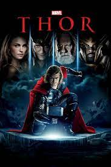
Thor (2011)
Thor is a 2011 American superhero film based on the Marvel Comics character of the same name. Produced by Marvel Studios
and distributed by Paramount Pictures,[N 1] it is the fourth film in the Marvel Cinematic Universe (MCU). It was directed
by Kenneth Branagh, written by the writing team of Ashley Edward Miller and Zack Stentz along with Don Payne, and stars
Chris Hemsworth as the title character alongside Natalie Portman, Tom Hiddleston, Stellan Skarsgård, Colm Feore, Ray Stevenson,
Idris Elba, Kat Dennings, Rene Russo, and Anthony Hopkins. After reigniting a dormant war, Thor is banished from Asgard to
Earth, stripped of his powers and his hammer Mjölnir. As his brother Loki (Hiddleston) plots to take the Asgardian throne,
Thor must prove himself worthy.Sam Raimi first developed the concept of a film adaptation based on Thor in 1991, but soon
abandoned the project, leaving it in "development hell" for several years. During this time, the rights were picked up by
various film studios until Marvel signed Mark Protosevich to develop the project in 2006, and planned to finance and release
it through Paramount. Matthew Vaughn was assigned to direct the film for a tentative 2010 release. However, after Vaughn was
released from his holding deal in 2008, Branagh was approached and the film's release was rescheduled to 2011
Read more...

Captain America : The First Avenger (2011)
Captain America: The First Avenger is a 2011 American superhero film based on the Marvel Comics character Captain America. Produced
by Marvel Studios and distributed by Paramount Pictures,[N 1] it is the fifth film in the Marvel Cinematic Universe (MCU). The film
was directed by Joe Johnston, written by Christopher Markus and Stephen McFeely, and stars Chris Evans as Steve Rogers / Captain
America alongside Tommy Lee Jones, Hugo Weaving, Hayley Atwell, Sebastian Stan, Dominic Cooper, Neal McDonough, Derek Luke, and
Stanley Tucci. During World War II, Steve Rogers, a frail man, is transformed into the super-soldier Captain America and must
stop the Red Skull (Weaving) from using the Tesseract as an energy source for world domination.The film began as a concept in
1997 and was scheduled for distribution by Artisan Entertainment. However, a lawsuit disrupted the project and was not settled
until September 2003. In 2005, Marvel Studios received a loan from Merrill Lynch, and planned to finance and release the film
through Paramount Pictures. Directors Jon Favreau and Louis Leterrier were interested in directing the project before Johnston was
approached in 2008. The principal characters were cast between March and June 2010. Production began in June, and filming took place in
London, Manchester, Caerwent, Liverpool, and Los Angeles. Several different techniques were used by the visual effects company Lola to
create the physical appearance of the character before he becomes Captain America.
Read more...

Marvel's The Avenger's (2012)
Marvel's The Avengers[6] (classified under the name Marvel Avengers Assemble in the United Kingdom and Ireland),[3][7] or simply The Avengers,
is a 2012 American superhero film based on the Marvel Comics superhero team of the same name. Produced by Marvel Studios and distributed by
Walt Disney Studios Motion Pictures,[N 1] it is the sixth film in the Marvel Cinematic Universe (MCU). Written and directed by Joss Whedon,
the film features an ensemble cast including Robert Downey Jr., Chris Evans, Mark Ruffalo, Chris Hemsworth, Scarlett Johansson, and Jeremy
Renner as the Avengers, alongside Tom Hiddleston, Clark Gregg, Cobie Smulders, Stellan Skarsgård, and Samuel L. Jackson. In the film, Nick
Fury and the spy agency S.H.I.E.L.D. recruit Tony Stark, Steve Rogers, Bruce Banner, Thor, Natasha Romanoff, and Clint Barton to form a team
capable of stopping Thor's brother Loki from subjugating Earth.The film's development began when Marvel Studios received a loan from Merrill
Lynch in April 2005. After the success of the film Iron Man in May 2008, Marvel announced that The Avengers would be released in July 2011
and would bring together Tony Stark (Downey), Steve Rogers (Evans), Bruce Banner (Ruffalo), and Thor (Hemsworth) from Marvel's previous films.
With the signing of Johansson as Natasha Romanoff in March 2009 and Renner as Clint Barton in June 2010, the film was pushed back for a 2012
release. Whedon was brought on board in April 2010 and rewrote the original screenplay by Zak Penn. Production began in April 2011 in Albuquerque,
New Mexico, before moving to Cleveland, Ohio in August and New York City in September. The film has more than 2,200 visual effects shots.
Read more...
Phase 2

Iron Man 3 (2013)
Iron Man 3 (titled onscreen as Iron Man Three)[4][5] is a 2013 American superhero film based on the Marvel Comics character Iron Man, produced by
Marvel Studios and distributed by Walt Disney Studios Motion Pictures.[N 1] It is the sequel to Iron Man (2008) and Iron Man 2 (2010), and the
seventh film in the Marvel Cinematic Universe (MCU). The film was directed by Shane Black from a screenplay he co-wrote with Drew Pearce, and
stars Robert Downey Jr. as Tony Stark / Iron Man alongside Gwyneth Paltrow, Don Cheadle, Guy Pearce, Rebecca Hall, Stéphanie Szostak, James
Badge Dale, Jon Favreau, and Ben Kingsley. In Iron Man 3, Tony Stark wrestles with the ramifications of the events of The Avengers during a
national terrorism campaign on the United States led by the mysterious Mandarin.After the release of Iron Man 2 in May 2010, director Favreau
chose not to return for a third film. Black was hired to write and direct the sequel in February 2011, working with Pearce to make the script
more character-centric, focus on thriller elements, and use concepts from Warren Ellis's "Extremis" comic book story arc. The film's supporting
cast, including Kingsley, Pearce, and Hall, were brought on throughout April and May 2012. Filming took place from May 23 to December 17, 2012,
primarily at EUE/Screen Gems Studios in Wilmington, North Carolina. Additional filming took place around North Carolina as well as in Florida,
Los Angeles, and China; an extended version of the film specifically for Chinese audiences was created. Seventeen companies provided the film's
visual effects.
Read more...

Thor : The Dark World (2013)
Thor: The Dark World is a 2013 American superhero film based on the Marvel Comics character Thor, produced by Marvel Studios and distributed by Walt
Disney Studios Motion Pictures. It is the sequel to Thor (2011) and the eighth film in the Marvel Cinematic Universe (MCU). The film was directed by
Alan Taylor from a screenplay by Christopher Yost and the writing team of Christopher Markus and Stephen McFeely. It stars Chris Hemsworth as Thor
alongside Natalie Portman, Tom Hiddleston, Anthony Hopkins, Stellan Skarsgård, Idris Elba, Christopher Eccleston, Adewale Akinnuoye-Agbaje, Kat Dennings,
Ray Stevenson, Zachary Levi, Tadanobu Asano, Jaimie Alexander, and Rene Russo. In the film, Thor and Loki (Hiddleston) team up to save the Nine Realms
from the Dark Elves.Development of a sequel to Thor began in April 2011 when producer Kevin Feige announced plans for it to follow the MCU crossover
film The Avengers (2012). In July, Thor director Kenneth Branagh withdrew from the sequel. Brian Kirk and Patty Jenkins were considered to replace him
as director before Taylor was hired in January 2012. The supporting cast filled out in August 2012, with the hiring of Eccleston and Akinnuoye-Agbaje as
the film's villains. Filming took place from September to December 2012 primarily in Surrey, England, as well as in Iceland and London. Taylor wanted the
film to be more grounded than Thor, inspired by his work on Game of Thrones. He hired Carter Burwell to compose the score, but Marvel replaced Burwell
with Brian Tyler.
Read more...

Captain America : The Winter Soldier (2014)
Captain America: The Winter Soldier is a 2014 American superhero film based on the Marvel Comics character Captain America, produced by Marvel Studios
and distributed by Walt Disney Studios Motion Pictures. It is the sequel to Captain America: The First Avenger (2011) and the ninth film in the Marvel
Cinematic Universe (MCU). The film was directed by Anthony and Joe Russo from a screenplay by the writing team of Christopher Markus and Stephen McFeely.
It stars Chris Evans as Steve Rogers / Captain America alongside Scarlett Johansson, Sebastian Stan, Anthony Mackie, Cobie Smulders, Frank Grillo, Emily
VanCamp, Hayley Atwell, Robert Redford, and Samuel L. Jackson. In the film, Captain America joins forces with Black Widow (Johansson) and Falcon (Mackie)
to uncover a conspiracy within the spy agency S.H.I.E.L.D. while facing a mysterious assassin known as the Winter Soldier (Stan).Markus and McFeely began
writing the sequel around the release of The First Avenger in July 2011. The script draws from the Winter Soldier story arc in the comic books written by
Ed Brubaker as well as conspiracy fiction from the 1970s such as Three Days of the Condor (1975). The film explores S.H.I.E.L.D., similarly to how the
first film explored the U.S. military, after Rogers was shown working for the agency in the MCU crossover film The Avengers (2012). The Russo brothers
signed to direct in June 2012 and casting began the following month. Filming began in April 2013 in Los Angeles, California, before moving to Washington,
D.C., and Cleveland, Ohio. The directors used practical effects and intense stunt work, but also 2,500 visual effects shots created by six companies.
Read more...

Gaurdians Of The Galaxy Vol.1 (2014)
Guardians of the Galaxy (retroactively referred to as Guardians of the Galaxy Vol. 1)[4][5] is a 2014 American superhero film based on the Marvel Comics
superhero team of the same name. Produced by Marvel Studios and distributed by Walt Disney Studios Motion Pictures, it is the 10th film in the Marvel
Cinematic Universe (MCU). Directed by James Gunn, who wrote the screenplay with Nicole Perlman, the film features an ensemble cast including Chris Pratt,
Zoe Saldaña, Dave Bautista, Vin Diesel, and Bradley Cooper as the titular Guardians, along with Lee Pace, Michael Rooker, Karen Gillan, Djimon Hounsou,
John C. Reilly, Glenn Close, and Benicio del Toro. In the film, Peter Quill and a group of extraterrestrial criminals go on the run after stealing a
powerful artifact.Perlman began working on the screenplay in 2009. Producer Kevin Feige first publicly mentioned Guardians of the Galaxy as a potential
film in 2010 and Marvel Studios announced it was in active development at the July 2012 San Diego Comic-Con. Gunn was hired to write and direct the film
that September. In February 2013, Pratt was hired to play Peter Quill / Star-Lord, and the supporting cast members were subsequently confirmed. Principal
photography began in July 2013 at Shepperton Studios in England, with filming continuing in London before wrapping up in October 2013. In addition to an
original score by Tyler Bates, the film's soundtrack includes several popular songs from the 1960s and 1970s chosen by Gunn. Post-production was completed
on July 7, 2014.
Read more...

Avenger's : Age Of Ultron (2015)
Avengers: Age of Ultron is a 2015 American superhero film based on the Marvel Comics superhero team the Avengers. Produced by Marvel Studios and distributed
by Walt Disney Studios Motion Pictures, it is the sequel to The Avengers (2012) and the 11th film in the Marvel Cinematic Universe (MCU). Written and
directed by Joss Whedon, the film features an ensemble cast including Robert Downey Jr., Chris Hemsworth, Mark Ruffalo, Chris Evans, Scarlett Johansson,
Jeremy Renner, Don Cheadle, Aaron Taylor-Johnson, Elizabeth Olsen, Paul Bettany, Cobie Smulders, Anthony Mackie, Hayley Atwell, Idris Elba, Stellan
Skarsgård, James Spader, and Samuel L. Jackson. In the film, the Avengers fight Ultron, an artificial intelligence with the goal of causing human
extinction.The sequel was announced in May 2012 after the successful release of The Avengers, with Whedon set to return as writer and director in August.
Whedon updated Ultron's origin for the film to involve the MCU's Avengers team, and introduced the characters Quicksilver and Scarlet Witch to whom Marvel
shared the rights with 20th Century Fox. Casting began in June 2013 with the re-signing of Downey. Second unit filming began in February 2014 in South
Africa with principal photography taking place between March and August, primarily at Shepperton Studios in Surrey, England. Additional footage was filmed
in Italy, South Korea, Bangladesh, New York state, and around England. With an estimated net production budget of $365 million, the film is the second most
expensive film ever made.
Read more...
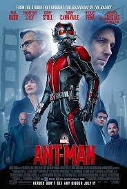
Ant-Man (2015)
Ant-Man is a 2015 American superhero film based on the Marvel Comics characters of the same name: Scott Lang and Hank Pym. Produced by Marvel Studios and
distributed by Walt Disney Studios Motion Pictures, it is the 12th film in the Marvel Cinematic Universe (MCU). The film was directed by Peyton Reed from a
screenplay by the writing teams of Edgar Wright and Joe Cornish, and Adam McKay and Paul Rudd. It stars Rudd as Scott Lang / Ant-Man alongside Evangeline
Lilly, Corey Stoll, Bobby Cannavale, Michael Peña, Tip "T.I." Harris, Anthony Mackie, Wood Harris, Judy Greer, David Dastmalchian, and Michael Douglas as
Hank Pym. In the film, Lang must help defend Pym's Ant-Man shrinking technology and plot a heist with worldwide ramifications.Development of Ant-Man began
in April 2006 with the hiring of Wright to direct and co-write with Cornish. By April 2011, Wright and Cornish had completed three drafts of the script and
Wright shot test footage for the film in July 2012. Pre-production began in October 2013 after being put on hold so that Wright could complete The World's
End. Casting began in December 2013, with the hiring of Rudd to play Lang. In May 2014, Wright left the project citing creative differences, though he still
received screenplay and story credits with Cornish. The following month, Reed was brought in to replace Wright, while McKay was hired to contribute to the
script with Rudd. Filming took place between August and December 2014 in San Francisco and Metro Atlanta.
Read more...
Phase 3

Captain America : Civil War (2016)
Captain America: Civil War is a 2016 American superhero film based on the Marvel Comics character Captain America, produced by Marvel Studios and distributed
by Walt Disney Studios Motion Pictures. It is the sequel to Captain America: The First Avenger (2011) and Captain America: The Winter Soldier (2014), and the
13th film in the Marvel Cinematic Universe (MCU). The film was directed by Anthony and Joe Russo from a screenplay by the writing team of Christopher Markus
and Stephen McFeely, and stars Chris Evans as Steve Rogers / Captain America alongside an ensemble cast including Robert Downey Jr., Scarlett Johansson,
Sebastian Stan, Anthony Mackie, Don Cheadle, Jeremy Renner, Chadwick Boseman, Paul Bettany, Elizabeth Olsen, Paul Rudd, Emily VanCamp, Tom Holland, Frank
Grillo, William Hurt, and Daniel Brühl. In Captain America: Civil War, disagreement over international oversight of the Avengers fractures the team into two
opposing factions—one led by Steve Rogers and the other by Tony Stark (Downey).Development of Civil War began in late 2013 when Markus and McFeely began
writing the screenplay, which borrows concepts from the 2006 comic book storyline "Civil War" while also focusing on story and character elements from the
previous Captain America films to conclude the trilogy. Following positive reactions to The Winter Soldier, the Russo brothers were brought back to direct
in early 2014. The film's title and premise were revealed in October 2014, along with Downey's involvement as Stark; additional cast members joined in the
following months. Principal photography began in April 2015 at Pinewood Atlanta Studios in Fayette County, Georgia, and continued in the Metro Atlanta area
before concluding in Germany in August 2015, with the film being the first to use IMAX's digital 2D cameras (for the film's central airport fight sequence).
Visual effects were provided by nearly 20 different studios.
Read more...

Doctor Strange (2016)
Doctor Strange is a 2016 American superhero film based on the Marvel Comics character of the same name. Produced by Marvel Studios and distributed by Walt
Disney Studios Motion Pictures, it is the 14th film in the Marvel Cinematic Universe (MCU). The film was directed by Scott Derrickson from a screenplay he
wrote with Jon Spaihts and C. Robert Cargill, and stars Benedict Cumberbatch as neurosurgeon Stephen Strange along with Chiwetel Ejiofor, Rachel McAdams,
Benedict Wong, Michael Stuhlbarg, Benjamin Bratt, Scott Adkins, Mads Mikkelsen, and Tilda Swinton. In the film, Strange learns the mystic arts after a
career-ending car crash.Various incarnations of a Doctor Strange film adaptation had been in development since the mid-1980s, until Paramount Pictures
acquired the film rights in April 2005 on behalf of Marvel Studios. Thomas Dean Donnelly and Joshua Oppenheimer were brought on board in June 2010 to write
a screenplay. In June 2014, Derrickson was hired to direct, with Spaihts re-writing the script. Cumberbatch was chosen for the eponymous role in December
2014, necessitating a schedule change to work around his other commitments. This gave Derrickson time to work on the script himself, for which he brought
Cargill on to help. Principal photography on the film began in November 2015 in Nepal, before moving to England and Hong Kong, and wrapping up in New York
City in April 2016.Doctor Strange had its world premiere in Hong Kong on October 13, 2016, and was released in the United States on November 4, as part of
Phase Three of the MCU. The film grossed over $677 million worldwide and was met with praise for its cast, visual effects, and musical score.
The film received an Academy Award nomination for Best Visual Effects. A sequel, Doctor Strange in the Multiverse of Madness, was released in May 2022.
Read more...

Gaurdians Of The Galaxy Vol 2 (2017)
Guardians of the Galaxy Vol. 2 is a 2017 American superhero film based on the Marvel Comics superhero team Guardians of the Galaxy, produced by Marvel
Studios and distributed by Walt Disney Studios Motion Pictures. It is the sequel to Guardians of the Galaxy (2014) and the 15th film in the Marvel Cinematic
Universe (MCU). Written and directed by James Gunn, the film stars an ensemble cast featuring Chris Pratt, Zoe Saldaña, Dave Bautista, Vin Diesel, Bradley
Cooper, Michael Rooker, Karen Gillan, Pom Klementieff, Elizabeth Debicki, Chris Sullivan, Sean Gunn, Sylvester Stallone, and Kurt Russell. In Guardians of
the Galaxy Vol. 2, the Guardians travel throughout the cosmos as they help Peter Quill learn more about his mysterious parentage.The film was officially
announced at the 2014 San Diego Comic-Con International before the theatrical release of the first film, along with James Gunn's return from the first film,
with the title of the sequel revealed a year later in June 2015. Principal photography began in February 2016 at Pinewood Atlanta Studios in Fayette County,
Georgia, with many crew changes from the first film due to other commitments. Filming concluded in June 2016. James Gunn chose to set the sequel shortly
after the first film to explore the characters' new roles as the Guardians, and to follow the storyline of Quill's father established throughout that
previous film. Russell was confirmed as Quill's father in July 2016, portraying Ego, a departure from Quill's comic father.Guardians of the Galaxy Vol. 2
premiered in Tokyo on April 10, 2017, and was released in the United States on May 5, 2017, as part of Phase Three of the MCU. It grossed more than $863
million worldwide, making it the eighth-highest-grossing film of 2017, while also outgrossing its predecessor. The film received praise for its visuals,
direction, soundtrack, humor, and performances, though some critics deemed it inferior to the original.
Read more...

Spider Man : Homecoming (2017)
Spider-Man: Homecoming is a 2017 American superhero film based on the Marvel Comics character Spider-Man, co-produced by Columbia Pictures and Marvel
tudios, and distributed by Sony Pictures Releasing. It is the second Spider-Man film reboot and the 16th film in the Marvel Cinematic Universe (MCU).
The film was directed by Jon Watts, from a screenplay by the writing teams of Jonathan Goldstein and John Francis Daley, Watts and Christopher Ford, and
Chris McKenna and Erik Sommers. Tom Holland stars as Peter Parker / Spider-Man, alongside Michael Keaton, Jon Favreau, Gwyneth Paltrow, Zendaya, Donald
Glover, Jacob Batalon, Laura Harrier, Tony Revolori, Bokeem Woodbine, Tyne Daly, Marisa Tomei, and Robert Downey Jr. In Spider-Man: Homecoming, Peter
Parker tries to balance high school life with being Spider-Man while facing the Vulture (Keaton).In February 2015, Marvel Studios and Sony reached a deal
to share the film rights for Spider-Man, integrating the character into the established MCU. The following June, Holland was cast as the title character,
and Watts was hired to direct. This was followed shortly by the hiring of Daley and Goldstein. In April 2016, the film's title was revealed, along with
additional cast, including Downey in his MCU role of Tony Stark / Iron Man. Principal photography began in June 2016 at Pinewood Atlanta Studios in Fayette
County, Georgia, and continued in Atlanta, Los Angeles, and New York City. The other screenwriters were revealed during filming, which concluded in Berlin
in October 2016. The production team made efforts to differentiate the film from previous Spider-Man films.Spider-Man: Homecoming premiered in Hollywood
on June 28, 2017, and was released in the United States on July 7, as part of Phase Three of the MCU. Homecoming grossed over $880 million worldwide,
becoming the second-most-successful Spider-Man film and the sixth-highest-grossing film of 2017. It received praise for the light tone and focus on Parker's
high school life, and the performances, particularly of Holland and Keaton. Two sequels have been released: Spider-Man: Far From Home (2019) and Spider-Man:
No Way Home (2021). A prequel animated series, Spider-Man: Freshman Year, is in development, as is a new trilogy of live-action films from Sony and Marvel
Studios.
Read more...

Thor : Ragnarok (2017)
Thor: Ragnarok is a 2017 American superhero film based on the Marvel Comics character Thor, produced by Marvel Studios and distributed by Walt Disney
Studios Motion Pictures. It is the sequel to Thor (2011) and Thor: The Dark World (2013), and is the 17th film in the Marvel Cinematic Universe (MCU).
The film was directed by Taika Waititi from a screenplay by Eric Pearson and the writing team of Craig Kyle and Christopher Yost, and stars Chris Hemsworth
as Thor alongside Tom Hiddleston, Cate Blanchett, Idris Elba, Jeff Goldblum, Tessa Thompson, Karl Urban, Mark Ruffalo, and Anthony Hopkins. In Thor:
Ragnarok, Thor must escape the alien planet Sakaar in time to save Asgard from Hela (Blanchett) and the impending Ragnarök.A third Thor film was confirmed
in January 2014, when Kyle and Yost began work on the screenplay. The involvement of Hemsworth and Hiddleston was announced that October. Waititi joined
the film as director a year later, after Thor: The Dark World director Alan Taylor chose not to return. Ruffalo joined the cast reprising the role of Hulk
from previous MCU films, which allowed elements of the 2006 comic storyline "Planet Hulk" to be adapted for Ragnarok. The rest of the cast, including
Blanchett as Hela, was confirmed in May 2016, with Pearson's involvement revealed at the start of filming that July. Principal photography took place in
Brisbane and Sydney, Australia, with the film also having exclusive use of Village Roadshow Studios in Oxenford, concluding in October 2016.Thor: Ragnarok
premiered in Los Angeles on October 10, 2017, and was released in the United States on November 3, 2017, as part of Phase Three of the MCU. The film
received praise for its acting and Waititi's direction, as well as the action sequences, visual effects, musical score, and humor, with many critics
considering it to be the best installment of the Thor films. It grossed $854 million, becoming the highest-grossing film of the trilogy and the
ninth-highest-grossing film of 2017. A sequel, Thor: Love and Thunder, is scheduled for release on July 8, 2022.
Read more...

Black Panther (2018)
Black Panther is a 2018 American superhero film based on the Marvel Comics character of the same name. Produced by Marvel Studios and distributed by Walt
Disney Studios Motion Pictures, it is the 18th film in the Marvel Cinematic Universe (MCU). The film was directed by Ryan Coogler, who co-wrote the
screenplay with Joe Robert Cole, and it stars Chadwick Boseman as T'Challa / Black Panther alongside Michael B. Jordan, Lupita Nyong'o, Danai Gurira,
Martin Freeman, Daniel Kaluuya, Letitia Wright, Winston Duke, Angela Bassett, Forest Whitaker, and Andy Serkis. In Black Panther, T'Challa is crowned king
of Wakanda following his father's death, but he is challenged by Killmonger (Jordan), who plans to abandon the country's isolationist policies and begin a
global revolution.Wesley Snipes planned to make a Black Panther film in 1992, but the project did not come to fruition. In September 2005, Marvel Studios
listed a Black Panther film as one of ten films based on Marvel characters intended to be distributed by Paramount Pictures. Mark Bailey was hired to write
a script in January 2011. Black Panther was officially announced in October 2014, and Boseman made his first appearance as the character in Captain
America: Civil War (2016). Cole and Coogler had joined by then, with additional casting in May. Black Panther is the first Marvel Studios film with a
Black director and a predominantly Black cast. Principal photography took place from January to April 2017 at EUE/Screen Gems Studios in the Atlanta
metropolitan area, and in Busan, South Korea.Black Panther premiered in Los Angeles on January 29, 2018, and was released theatrically in the United States
on February 16, as part of Phase Three of the MCU. Critics praised its direction, screenplay, acting (particularly that of Boseman, Jordan, and Wright),
costume design, production values, and soundtrack, but some criticized the computer-generated visual effects. Many critics considered the film to be one
of the best in the MCU, and it was also noted for its cultural significance. Organizations such as the National Board of Review and American Film Institute
named Black Panther as one of the top 10 films of 2018. It grossed over $1.3 billion worldwide and broke numerous box office records, becoming the
highest-grossing film directed by a Black filmmaker, the ninth-highest-grossing film of all time, the third-highest-grossing film in the U.S. and Canada,
and the second-highest-grossing film of 2018.
Read more...

Avengers : Infinity War (2018)
Avengers: Infinity War is a 2018 American superhero film based on the Marvel Comics superhero team the Avengers. Produced by Marvel Studios and distributed
by Walt Disney Studios Motion Pictures, it is the sequel to The Avengers (2012) and Avengers: Age of Ultron (2015), and the 19th film in the Marvel Cinematic
Universe (MCU). Directed by Anthony and Joe Russo and written by Christopher Markus and Stephen McFeely, the film features an ensemble cast including Robert
Downey Jr., Chris Hemsworth, Mark Ruffalo, Chris Evans, Scarlett Johansson, Benedict Cumberbatch, Don Cheadle, Tom Holland, Chadwick Boseman, Paul Bettany,
Elizabeth Olsen, Anthony Mackie, Sebastian Stan, Danai Gurira, Letitia Wright, Dave Bautista, Zoe Saldaña, Josh Brolin, and Chris Pratt. In the film, the
Avengers and the Guardians of the Galaxy attempt to prevent Thanos from collecting the six all-powerful Infinity Stones as part of his quest to kill half
of all life in the universe.The film was announced in October 2014 as Avengers: Infinity War – Part 1. The Russo brothers came on board to direct in April
2015, and a month later Markus and McFeely had signed on to write the script for the film, which draws inspiration from Jim Starlin's 1991 comic book The
Infinity Gauntlet and Jonathan Hickman's 2013 comic book Infinity. In 2016, Marvel shortened the title to Avengers: Infinity War. Filming began in January
2017 at Pinewood Atlanta Studios in Fayette County, Georgia, with a large cast consisting mostly of actors reprising their roles from previous MCU films,
including Brolin as Thanos. The production lasted until July 2017, shooting back-to-back with a direct sequel, Avengers: Endgame (2019). Additional filming
took place in Scotland, the Downtown Atlanta area, and New York City. With an estimated budget of $325–400 million, the film is one of the most expensive
films ever made.Avengers: Infinity War premiered in Los Angeles on April 23, 2018, and was released in the United States on April 27, as part of Phase Three
of the MCU. The film received praise for Brolin's performance, visual effects, action sequences, and emotional weight, but was criticized for relying on
previous MCU films for its story. The film was the fourth film and the first superhero film to gross over $2 billion worldwide, breaking numerous box
office records, and becoming the highest-grossing film of 2018 and the fourth-highest-grossing film of all time both worldwide and in the United States
and Canada.
Read more...

Ant-Man And The Wasp (2018)
Ant-Man and the Wasp is a 2018 American superhero film based on Marvel Comics featuring the characters Scott Lang / Ant-Man and Hope Pym / Wasp. Produced by
Marvel Studios and distributed by Walt Disney Studios Motion Pictures, it is the sequel to Ant-Man (2015) and the 20th film in the Marvel Cinematic Universe
(MCU). The film is directed by Peyton Reed and written by the writing teams of Chris McKenna and Erik Sommers, and Paul Rudd, Andrew Barrer and Gabriel
Ferrari. It stars Rudd as Lang and Evangeline Lilly as Hope van Dyne, alongside Michael Peña, Walton Goggins, Bobby Cannavale, Judy Greer, Tip "T.I."
Harris, David Dastmalchian, Hannah John-Kamen, Abby Ryder Fortson, Randall Park, Michelle Pfeiffer, Laurence Fishburne, and Michael Douglas. In Ant-Man
and the Wasp, the titular pair work with Hank Pym (Douglas) to retrieve Janet van Dyne (Pfeiffer) from the Quantum Realm.Talks for a sequel to Ant-Man
began shortly after that film was released. Ant-Man and the Wasp was officially announced in October 2015, with Rudd and Lilly returning to reprise their
roles. A month later, Ant-Man director Reed was officially set to return. He had joined the first film later in the process and was excited to develop this
one from the beginning. He also looked forward to introducing Hope van Dyne as the Wasp in this film, and insisted on treating Lang and her as equals.
Filming took place from August to November 2017, at Pinewood Atlanta Studios in Fayette County, Georgia, as well as Metro Atlanta, San Francisco, Savannah,
Georgia, and Hawaii.Ant-Man and the Wasp had its world premiere in Hollywood on June 25, 2018, and was released in the United States on July 6, 2018, as
part of Phase Three of the MCU. The film was a critical and commercial success, receiving praise for its levity, humor, and performances, particularly
those of Rudd and Lilly, and grossed over $622 million worldwide. A sequel, Ant-Man and the Wasp: Quantumania, is scheduled for release in February 2023.
Read more...

Captain Marvel (2019)
Captain Marvel is a 2019 American superhero film based on Marvel Comics featuring the character Carol Danvers / Captain Marvel. Produced by Marvel Studios
and distributed by Walt Disney Studios Motion Pictures, it is the 21st film in the Marvel Cinematic Universe (MCU). The film was written and directed by
Anna Boden and Ryan Fleck, with Geneva Robertson-Dworet also contributing to the screenplay. Brie Larson stars as Carol Danvers, alongside Samuel L.
Jackson, Ben Mendelsohn, Djimon Hounsou, Lee Pace, Lashana Lynch, Gemma Chan, Annette Bening, Clark Gregg, and Jude Law. Set in 1995, the story follows
Danvers as she becomes Captain Marvel after Earth is caught in the center of a galactic conflict between two alien civilizations.Development of the film
began by May 2013. It was officially announced in October 2014 as Marvel Studios' first female-led superhero film. Nicole Perlman and Meg LeFauve were hired
to write the film the following April after submitting separate takes on the character, and borrowed elements from Roy Thomas' 1971 "Kree–Skrull War" comic
book storyline. Larson was announced as Danvers at the 2016 San Diego Comic-Con, with Boden and Fleck hired to direct in April 2017. Robertson-Dworet was
soon hired to re-write the script, with the rest of the cast added by the start of filming. Location shooting began in January 2018, with principal
photography starting that March in California and concluding in Louisiana in July 2018. Several actors reprise their roles from previous MCU films in
Captain Marvel, including Jackson and Gregg who were digitally de-aged in post-production to reflect the film's 1990s setting.Captain Marvel premiered in
London on February 27, 2019, and was theatrically released in the United States on March 8, as part of Phase Three of the MCU. The film grossed over $1.1
billion worldwide, making it the first female-led superhero film to pass the billion-dollar mark. It became the fifth-highest-grossing film of 2019 and was
the 23rd-highest-grossing film of all time during its theatrical run. The film received generally positive reviews from critics with praise for the
performances of the cast, particularly that of Larson. A sequel, The Marvels, is scheduled for release on July 28, 2023.
Read more...

Avengers : Endgame (2019)
Avengers: Endgame is a 2019 American superhero film based on the Marvel Comics superhero team the Avengers. Produced by Marvel Studios and distributed by
Walt Disney Studios Motion Pictures, it is the direct sequel to Avengers: Infinity War (2018) and the 22nd film in the Marvel Cinematic Universe (MCU).
Directed by Anthony and Joe Russo and written by Christopher Markus and Stephen McFeely, the film features an ensemble cast including Robert Downey Jr.,
Chris Evans, Mark Ruffalo, Chris Hemsworth, Scarlett Johansson, Jeremy Renner, Don Cheadle, Paul Rudd, Brie Larson, Karen Gillan, Danai Gurira, Benedict
Wong, Jon Favreau, Bradley Cooper, Gwyneth Paltrow, and Josh Brolin. In the film, the surviving members of the Avengers and their allies attempt to reverse
the destruction caused by Thanos in Infinity War.The film was announced in October 2014 as Avengers: Infinity War – Part 2, but Marvel later removed this
title. The Russo brothers joined as directors in April 2015, with Markus and McFeely signing on to write the script a month later. The film serves as a
conclusion to the story of the MCU up to that point, ending the story arcs for several main characters. The plot revisits several moments from earlier
films, bringing back actors and settings from throughout the franchise. Filming began in August 2017 at Pinewood Atlanta Studios in Fayette County, Georgia,
shooting back-to-back with Infinity War, and ended in January 2018. Additional filming took place in the Metro and Downtown Atlanta areas, New York state,
Scotland, and England. The official title was revealed in December 2018. With an estimated budget of $356–400 million, the film is one of the most
expensive films ever made.Avengers: Endgame premiered in Los Angeles on April 22, 2019, and was released in the United States on April 26, as part of Phase
Three of the MCU. The film received praise for its direction, acting, musical score, action sequences, visual effects, and emotional weight, with critics
lauding its culmination of the 22-film story. The film grossed $2.798 billion worldwide, surpassing Infinity War's entire theatrical run in just eleven
days and breaking numerous box office records, including becoming the highest-grossing film of all time from July 2019 until March 2021. The film received
numerous awards and nominations, including a nomination for Best Visual Effects at the 92nd Academy Awards, three nominations at the 25th Critics' Choice
Awards (winning two), and a nomination for Special Visual Effects at the 73rd British Academy Film Awards.
Read more...

Spider-Man Far From Home (2019)
Spider-Man: Far From Home is a 2019 American superhero film based on the Marvel Comics character Spider-Man, co-produced by Columbia Pictures and Marvel
Studios, and distributed by Sony Pictures Releasing. It is the sequel to Spider-Man: Homecoming (2017) and the 23rd film in the Marvel Cinematic Universe
(MCU). The film was directed by Jon Watts, written by Chris McKenna and Erik Sommers, and stars Tom Holland as Peter Parker / Spider-Man, alongside Samuel
L. Jackson, Zendaya, Cobie Smulders, Jon Favreau, J. B. Smoove, Jacob Batalon, Martin Starr, Marisa Tomei, and Jake Gyllenhaal. In the film, Parker is
recruited by Nick Fury (Jackson) and Mysterio (Gyllenhaal) to face the Elementals while he is on a school trip to Europe.Discussions for a sequel to
Spider-Man: Homecoming began by October 2016, and the project was confirmed later that year. Holland, Watts, and the writers were all set to return by the
end of 2017. In 2018, Jackson and Gyllenhaal joined the cast as Fury and Mysterio, respectively. Holland revealed the sequel's title ahead of filming, which
began that July and took place in England, the Czech Republic, Italy, and the New York metropolitan area. Production wrapped in October 2018. The marketing
campaign is one of the most expensive for a film ever and attempted to avoid revealing spoilers for Avengers: Endgame prior to its April 2019 release.
Spider-Man: Far From Home premiered at the TCL Chinese Theatre on June 26, 2019, and was theatrically released in the United States on July 2, as the last
film in Phase Three of the MCU. The film received positive reviews with praise for its humor, action sequences, visuals, and the performances of Holland and
Gyllenhaal. It grossed over $1.1 billion worldwide, making it the first Spider-Man film to pass the billion-dollar mark, the fourth-highest-grossing film of
2019, and became Sony Pictures' highest-grossing film and the 24th-highest-grossing film of all time. A sequel, Spider-Man: No Way Home, was released in
December 2021.
Read more...
Phase 4 (Movies released up till now)

Black Widow (2021)
Black Widow is a 2021 American superhero film based on Marvel Comics featuring the character of the same name. Produced by Marvel Studios and distributed by
Walt Disney Studios Motion Pictures, it is the 24th film in the Marvel Cinematic Universe (MCU). The film was directed by Cate Shortland from a screenplay
by Eric Pearson, and stars Scarlett Johansson as Natasha Romanoff / Black Widow alongside Florence Pugh, David Harbour, O-T Fagbenle, Olga Kurylenko, William
Hurt, Ray Winstone, and Rachel Weisz. Set after the events of Captain America: Civil War (2016), the film sees Romanoff on the run and forced to confront
her past.Lionsgate Films began developing a Black Widow film in April 2004, with David Hayter attached to write and direct. The project did not move forward
and the character's film rights had reverted to Marvel Studios by June 2006. Johansson was cast in the role for several MCU films beginning with Iron Man 2
(2010), and began discussing a solo film with Marvel. Work began in late 2017, with Shortland hired in 2018. Jac Schaeffer and Ned Benson contributed to
the script before Pearson was hired. Filming took place from May to October 2019 in Norway, Budapest, Morocco, Pinewood Studios in England, and in Atlanta,
Macon, and Rome, Georgia.Black Widow premiered at events around the world on June 29, 2021, and was released in the United States on July 9, simultaneously
in theaters and through Disney+ with Premier Access. It is the first film in Phase Four of the MCU, and was delayed three times from an original May 2020
release date due to the COVID-19 pandemic. Black Widow broke several pandemic box office records and grossed over $379 million worldwide.[a] The film
received positive reviews from critics, with praise for the performances, particularly those of Johansson and Pugh, and the action sequences. In July 2021,
Johansson filed a lawsuit against Disney over the simultaneous release, which was settled two months later.
Read more...

Shang-Chi and The Legend of the Ten Rings (2021)
Shang-Chi and the Legend of the Ten Rings is a 2021 American superhero film based on Marvel Comics featuring the character Shang-Chi. Produced by Marvel
Studios and distributed by Walt Disney Studios Motion Pictures, it is the 25th film in the Marvel Cinematic Universe (MCU). The film was directed by Destin
Daniel Cretton, from a screenplay he wrote with Dave Callaham and Andrew Lanham, and stars Simu Liu as Shang-Chi alongside Awkwafina, Meng'er Zhang, Fala
Chen, Florian Munteanu, Benedict Wong, Michelle Yeoh, Ben Kingsley, and Tony Leung. In the film, Shang-Chi is forced to confront his past when his father
Wenwu (Leung), the leader of the Ten Rings organization, draws Shang-Chi and his sister Xialing (Zhang) into a search for a mythical village.A film based
on Shang-Chi entered development in 2001, but work did not begin in earnest until December 2018 when Callaham was hired. Cretton joined in March 2019, with
the project fast-tracked as Marvel's first film with an Asian lead. The film's title and primary cast were announced that July, revealing the film's
connection to the Ten Rings organization, which previously appeared throughout the MCU, and its leader Wenwu. Shang-Chi and the Legend of the Ten Rings is
the first Marvel Studios film with an Asian director and a predominantly Asian cast. Filming began in Sydney in February 2020 but was put on hold in March
due to the COVID-19 pandemic. Production resumed in August before completing in October, with additional shooting occurring in San Francisco.Shang-Chi and
the Legend of the Ten Rings premiered in Los Angeles on August 16, 2021, and was released in the United States on September 3, as part of Phase Four of the
MCU. It grossed over $432 million worldwide, making it the ninth-highest-grossing film of 2021. It set several box office records and received positive
reviews from critics, many of whom praised the choreography of the action sequences, exploration and representation of Asian culture, direction, and the
performances from the cast, particularly those of Liu and Leung. The film received numerous awards and nominations, including a nomination for Best Visual
Effects at the 94th Academy Awards. A sequel is currently in development, with Cretton set to return as writer and director.
Read more...

Eternals (2021)
Eternals is a 2021 American superhero film based on the Marvel Comics race of the same name. Produced by Marvel Studios and distributed by Walt Disney
Studios Motion Pictures, it is the 26th film in the Marvel Cinematic Universe (MCU). The film is directed by Chloé Zhao, who wrote the screenplay with
Patrick Burleigh, Ryan Firpo, and Kaz Firpo. It stars an ensemble cast including Gemma Chan, Richard Madden, Kumail Nanjiani, Lia McHugh, Brian Tyree
Henry, Lauren Ridloff, Barry Keoghan, Don Lee, Harish Patel, Kit Harington, Salma Hayek, and Angelina Jolie. In the film, the Eternals, immortal alien
beings, emerge from hiding after thousands of years to protect Earth from their ancient counterparts, the Deviants. In April 2018, Marvel Studios president
Kevin Feige announced that a film based on the Eternals had begun development, with Ryan and Kaz Firpo hired to write the script in May. Zhao was set to
direct the film by late September, and was given significant creative freedom with the film, which resulted in filming on location more than previous MCU
films. Zhao rewrote the screenplay, which Burleigh was later reported to have also contributed to. Principal photography took place from July 2019 to
February 2020, at Pinewood Studios as well as on location in London and Oxford, England, and in the Canary Islands. Eternals premiered in Los Angeles on
October 18, 2021, and was released in the United States on November 5, as part of Phase Four of the MCU. The film grossed $402 million worldwide. It
received mixed reviews from critics, who praised its themes and visuals, but criticized its screenplay, pacing, runtime, and character development.
Read more...

Spider-Man No Way Home (2021)
Spider-Man: No Way Home is a 2021 American superhero film based on the Marvel Comics character Spider-Man, co-produced by Columbia Pictures and Marvel
Studios and distributed by Sony Pictures Releasing. It is the sequel to Spider-Man: Homecoming (2017) and Spider-Man: Far From Home (2019), and the 27th
film in the Marvel Cinematic Universe (MCU). The film was directed by Jon Watts and written by Chris McKenna and Erik Sommers. It stars Tom Holland as Peter
Parker / Spider-Man alongside Zendaya, Benedict Cumberbatch, Jacob Batalon, Jon Favreau, Jamie Foxx, Willem Dafoe, Alfred Molina, Benedict Wong, Tony
Revolori, Marisa Tomei, Andrew Garfield, and Tobey Maguire. In the film, Parker asks Dr. Stephen Strange (Cumberbatch) to use magic to make his identity as
Spider-Man a secret again following its public revelation at the end of Far From Home. When the spell goes wrong, the multiverse is broken open which allows
visitors from alternate realities to enter Parker's universe.A third MCU Spider-Man film was planned during the production of Homecoming in 2017.
Negotiations between Sony and Marvel Studios to alter their deal—in which they produce the Spider-Man films together—ended with Marvel Studios leaving the
project in August 2019, but a negative fan reaction led to a new deal between the companies a month later. Watts, McKenna, Sommers, and Holland were set to
return, and filming took place from October 2020 to March 2021 in New York City and Atlanta. No Way Home features several actors reprising their roles from
non-MCU Spider-Man films directed by Sam Raimi and Marc Webb, including previous Spider-Man actors Maguire and Garfield. The involvement of both actors was
the subject of wide speculation and numerous leaks despite the efforts of Sony, Marvel, and the cast to conceal their involvement.
Read more...

Doctor Strange Into The Multiverse Of Madness (2022)
Doctor Strange in the Multiverse of Madness is a 2022 American superhero film based on Marvel Comics featuring the character Doctor Strange. Produced by
Marvel Studios and distributed by Walt Disney Studios Motion Pictures, it is the sequel to Doctor Strange (2016) and the 28th film in the Marvel Cinematic
Universe (MCU). The film was directed by Sam Raimi, written by Michael Waldron, and stars Benedict Cumberbatch as Stephen Strange, alongside Elizabeth
Olsen, Chiwetel Ejiofor, Benedict Wong, Xochitl Gomez, Michael Stuhlbarg, and Rachel McAdams. In the film, Strange protects America Chavez (Gomez), a
teenager capable of traveling the multiverse, from Wanda Maximoff (Olsen).Doctor Strange director and co-writer Scott Derrickson had plans for a sequel by
October 2016. He signed to return as director in December 2018, when Cumberbatch was confirmed to return. The film's title was announced in July 2019 along
with Olsen's involvement, while Jade Halley Bartlett was hired to write the film that October. Derrickson stepped down as director in January 2020, citing
creative differences. Waldron and Raimi joined the following month and started over, adding elements of the horror genre that Raimi had worked with
previously and making Maximoff the villain of the film, continuing her story from the series WandaVision (2021). Filming began in November 2020 in London
but was put on hold in January 2021 due to the COVID-19 pandemic. Production resumed by March 2021 and concluded in mid-April in Somerset. Shooting also
occurred in Surrey and Los Angeles.Doctor Strange in the Multiverse of Madness premiered at the Dolby Theatre in Hollywood on May 2, 2022, and was released
in the United States on May 6, as part of Phase Four of the MCU. The film received praise for Raimi's direction, the visuals, and Olsen's performance,
while criticism was mostly directed towards the plot. It grossed over $945 million worldwide, making it the highest-grossing film of 2022.
Read more...

Thor : Love and Thunder (2022)
Thor: Love and Thunder is a 2022 American superhero film based on the Marvel Comics character Thor, produced by Marvel Studios and distributed by Walt
Disney Studios Motion Pictures. It is the direct sequel to Thor: Ragnarok (2017) and the 29th film in the Marvel Cinematic Universe (MCU). The film is
directed by Taika Waititi, who co-wrote the script with Jennifer Kaytin Robinson, and stars Chris Hemsworth as Thor alongside Christian Bale, Tessa
Thompson, Jaimie Alexander, Waititi, Russell Crowe, and Natalie Portman. In the film, Thor attempts to find inner peace, but must return to action and
recruit Valkyrie (Thompson), Korg (Waititi), and Jane Foster (Portman)—who is now the Mighty Thor—to stop Gorr the God Butcher (Bale) from eliminating all
gods.Hemsworth and Waititi had discussed plans for a sequel to Ragnarok by January 2018. Love and Thunder was announced in July 2019, with Hemsworth,
Waititi, and Thompson all set to return, as well as Portman who did not appear in Ragnarok. Waititi wanted to differentiate Love and Thunder from Ragnarok,
seeking to make a romance film and 1980s-inspired adventure. He adapted elements from Jason Aaron's run on the Mighty Thor comic book, which sees Foster
take on the mantle and powers of Thor whilst suffering from cancer. Robinson joined to contribute to the script in February 2020, and further casting was
revealed later that year including the appearance of the Guardians of the Galaxy. Production was expected to begin in late 2020 but was delayed by the
COVID-19 pandemic. Filming ultimately began in January 2021 in Sydney, Australia, and concluded at the beginning of June.
Read more...
Phase 4 (Upcoming Movies)

Black Panther : Wakanda Forever (2022)
Black Panther: Wakanda Forever is an upcoming American superhero film based on the Marvel Comics character Black Panther. Produced by Marvel Studios and
distributed by Walt Disney Studios Motion Pictures, it is intended to be the sequel to Black Panther (2018) and the 30th film in the Marvel Cinematic
Universe (MCU). The film is being directed by Ryan Coogler, who co-wrote the screenplay with Joe Robert Cole, and stars Lupita Nyong'o, Danai Gurira,
Martin Freeman, Daniel Kaluuya, Letitia Wright, Winston Duke, Angela Bassett, and Dominique Thorne.Ideas for a sequel began after the release of Black
Panther in February 2018. Coogler negotiated to return as director in the following months, and Marvel Studios officially confirmed the sequel's development
in mid-2019. Plans for the film changed in August 2020 when Black Panther star Chadwick Boseman died from colon cancer, with Marvel choosing not to recast
his role of T'Challa. Other main cast members from the first film were confirmed to return by that November, and the title was announced in May 2021.
Production initially took place from late June to early November 2021, in Atlanta and Brunswick, Georgia, as well as around Massachusetts, before a hiatus
to allow Wright to recover from an injury sustained during filming. Production resumed by mid-January 2022 and wrapped in late March in Puerto Rico.Black
Panther: Wakanda Forever is scheduled to be released in the United States on November 11, 2022, as part of Phase Four of the MCU.
Read more...

Ant-Man And The Wasp : Quantumania (2023)
Ant-Man and the Wasp: Quantumania is an upcoming American superhero film based on Marvel Comics featuring the characters Scott Lang / Ant-Man and Hope Pym /
Wasp. Produced by Marvel Studios and distributed by Walt Disney Studios Motion Pictures, it is intended to be the sequel to Ant-Man (2015) and Ant-Man and
the Wasp (2018) and the 31st film of the Marvel Cinematic Universe (MCU). The film is directed by Peyton Reed from a screenplay by Jeff Loveness, and stars
Paul Rudd as Scott Lang and Evangeline Lilly as Hope van Dyne, alongside Michael Douglas, Michelle Pfeiffer, Kathryn Newton, and Jonathan Majors.Plans for
a third Ant-Man film were confirmed in November 2019, with Reed and Rudd returning. Loveness was hired by April 2020, with development on the film
beginning during the COVID-19 pandemic. The film's title and new cast members were announced in December 2020. Filming in Turkey began in early February
2021, while additional filming occurred in San Francisco in mid-June, ahead of principal photography starting at the end of July at Pinewood Studios in
Buckinghamshire and ended in November.nt-Man and the Wasp: Quantumania is scheduled to be released in the United States on February 17, 2023, as part of
Phase Four of the MCU.
Read more...

Gaurdians Of The Galaxy Vol 3 (2023)
Guardians of the Galaxy Vol. 3 is an upcoming American superhero film based on the Marvel Comics superhero team Guardians of the Galaxy, produced by Marvel
Studios and distributed by Walt Disney Studios Motion Pictures. It is intended to be the sequel to Guardians of the Galaxy (2014) and Guardians of the
Galaxy Vol. 2 (2017) and the 32nd film in the Marvel Cinematic Universe (MCU). The film is written and directed by James Gunn and stars an ensemble cast
featuring Chris Pratt, Zoe Saldaña, Dave Bautista, Vin Diesel, Bradley Cooper, Karen Gillan, Pom Klementieff, Elizabeth Debicki, Sean Gunn, Sylvester
Stallone, and Will Poulter.James Gunn said in November 2014 that he had initial ideas for a third film in the series, and announced his return to write and
direct in April 2017. Disney fired him from the film in July 2018 following the resurfacing of controversial posts on Twitter, but the studio reversed
course by that October and reinstated Gunn as director. Gunn's return was publicly revealed in March 2019, with production resuming after Gunn completed
work on his film The Suicide Squad (2021) and its spin-off series Peacemaker (2022). Filming began in November 2021 at Trilith Studios in Atlanta, Georgia,
and lasted until early May 2022. Guardians of the Galaxy Vol. 3 is scheduled to be released in the United States on May 5, 2023, as part of Phase Four of
the MCU.
Read more...

The Marvels (2023)
The Marvels is an upcoming American superhero film based on Marvel Comics featuring the characters Carol Danvers / Captain Marvel, Kamala Khan / Ms. Marvel,
and Monica Rambeau. Produced by Marvel Studios and distributed by Walt Disney Studios Motion Pictures, it is intended to be the sequel to Captain Marvel
(2019), a continuation of the Disney+ series Ms. Marvel (2022), and the 33rd film in the Marvel Cinematic Universe (MCU). The film is directed by Nia
DaCosta from a screenplay by Megan McDonnell, and stars Brie Larson as Carol Danvers, Iman Vellani as Kamala Khan, and Teyonah Parris as Monica Rambeau,
alongside Samuel L. Jackson.Marvel Studios confirmed plans to make a sequel to Captain Marvel in July 2019, and development began in January 2020 with
McDonnell joining and Larson set to return. DaCosta was hired that August, with Vellani and Parris revealed to be cast in December. Second unit filming
began in mid-April 2021 in New Jersey, with the title revealed in early May. Principal photography had begun by early August 2021 and concluded by mid-May
2022, taking place at Pinewood Studios in Buckinghamshire and Longcross Studios in Surrey, England, as well as in Los Angeles and Tropea, Italy. The
Marvels is scheduled to be released in the United States on July 28, 2023, as part of Phase Four of the MCU.
Read more...

Fantastic Four (2024)
At the July 2019 San Diego Comic-Con, Feige announced Marvel Studios was developing a Fantastic Four film for the MCU,[20] with Jon Watts announced as the
director in December 2020.[49][50] Watts stepped down in April 2022 to take a break from superhero projects.
Non-MCU Movies

Howard the Duck (1986)
Howard the Duck, known in Europe as Howard: A New Breed of Hero, is a 1986 American superhero comedy film directed by Willard Huyck and starring Lea
Thompson, Jeffrey Jones, and Tim Robbins. Based on the Marvel Comics character of the same name, the film was produced by Gloria Katz and written by Huyck
and Katz, with George Lucas as executive producer. The screenplay was originally intended to be an animated film, but the film adaptation became live-action
because of a contractual obligation. Although several TV adaptations of Marvel characters had aired during the preceding 21 years, this was the first
attempt at a theatrical release since the Captain America serial of 1944.Lucas proposed adapting the comic book following the production of American
Graffiti (1973). After multiple production difficulties and mixed response to test screenings, Howard the Duck was released in theaters on August 1, 1986.
Upon its release, the film was a critical and commercial failure, and was criticized for its humor, performances, inconsistent tone, and the appearance of
the title character, though the effects and soundtrack were mostly praised. In the years since, it has been considered among the worst films of all time,
but has also developed a cult following.[4][5] It was nominated for seven Razzie Awards (winning four), and made about US$38 million (US$15 million
domestically) compared to its US$30–37 million budget.
Read more...
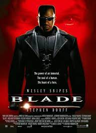
Blade (1998)
Blade is a 1998 American superhero film directed by Stephen Norrington and written by David S. Goyer. Based on the Marvel Comics superhero of the same
name,[4] it is the first installment of the Blade franchise. The film stars Wesley Snipes as the titular character with Stephen Dorff, Kris Kristofferson
and N'Bushe Wright in supporting roles. In the film, Blade is a Dhampir, a human with vampire strengths but not their weaknesses, who together with his
mentor Abraham Whistler and hematologist Karen Jenson, fights against vampires, namely the exceptionally vicious Deacon Frost.Released on August 21, 1998,
Blade was a commercial success, grossing $70 million at the U.S. box office, and $131.2 million worldwide. Despite mixed reviews from film critics, the
film received a positive reception from audiences and has since garnered a cult following. It is also hailed as one of Snipes' signature roles.[5] It was
followed by two sequels, Blade II and Blade: Trinity, both written by Goyer who also directed the latter.Blade was a dark superhero film for its time.[6]
The success of Blade began Marvel's film success and set the stage for further comic book film adaptations.
Read more...
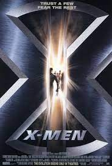
X-Men (2000)
X-Men is a 2000 American superhero film directed by Bryan Singer and written by David Hayter from a story by Singer and Tom DeSanto. The film is based on
the Marvel Comics superhero team of the same name and features an ensemble cast consisting of Patrick Stewart, Hugh Jackman, Ian McKellen, Halle Berry,
Famke Janssen, James Marsden, Bruce Davison, Rebecca Romijn-Stamos, Ray Park, Tyler Mane, and Anna Paquin. The film depicts a world where an unknown
proportion of people are mutants, whose possession of superhuman powers makes them distrusted by normal humans. It focuses on mutants Wolverine and Rogue
as they are brought into a conflict between two groups that have radically different approaches to bringing about the acceptance of mutant-kind: Charles
Xavier's X-Men, and the Brotherhood of Mutants, led by Magneto.Development of X-Men began as far back as 1984 with Orion Pictures, with James Cameron and
Kathryn Bigelow in discussions at one point. The film rights were bought by 20th Century Fox in 1994, and various scripts and film treatments were
commissioned from Andrew Kevin Walker, John Logan, Joss Whedon, and Michael Chabon. Singer signed to direct in 1996, with further rewrites by Ed Solomon,
Singer, Tom DeSanto, Christopher McQuarrie, and Hayter, in which Beast and Nightcrawler were deleted over budget concerns from Fox. X-Men marked the
Hollywood debut for Jackman, a last-second choice for Wolverine, cast three weeks into filming. Filming took place from September 22, 1999, to March 3,
2000, primarily in Toronto.X-Men premiered at Ellis Island on July 12, 2000, and was released in the United States two days later. It was a box office
success, grossing over $296.3 million worldwide, and received positive reviews from critics, citing its performances, story, and thematic depth. The film's
success led to a series of sequels, prequels, reboots, and spin-offs, with the overall success of the series spawning a reemergence of superhero films.
Read more...

Blade 2 (2002)
Blade II is a 2002 American superhero film based on the fictional character Blade from Marvel Comics, directed by Guillermo del Toro and written by David S.
Goyer. A sequel to Blade (1998), it is the second installment in the Blade franchise, followed by Blade: Trinity. The film follows the human-vampire hybrid
Blade in his continuing effort to protect humans from vampires, finding himself in a fierce battle against a group of mutant vampires who seek to commit
global genocide of both vampire and human races. Blade and his human allies are coerced into joining forces with a special elite group of vampires.Blade II
was released on March 22, 2002 and was a box office success, grossing over $155 million. It received mixed reviews from critics, earning praise for its
performances, atmosphere, direction, and action sequences, although its script and lack of character development have been criticized.
Read more...

Spider-Man (2002)
Spider-Man is a 2002 American superhero film based on the Marvel Comics character of the same name. Directed by Sam Raimi from a
screenplay by David Koepp, it is the first installment in Raimi's Spider-Man trilogy, and stars Tobey Maguire as the titular character, alongside Willem
Dafoe, Kirsten Dunst, James Franco, Cliff Robertson, and Rosemary Harris. The film chronicles Spider-Man's origins and early superhero career. After being
bitten by a genetically-altered spider, outcast teenage genius Peter Parker develops spider-like superhuman abilities and adopts a masked identity to fight
crime and injustice in New York City, facing the villainous Green Goblin in the process.Development on a live-action Spider-Man film began in the 1980s.
Filmmakers Tobe Hooper, James Cameron, and Joseph Zito were all attached to direct the film at one point. However, the project would languish in
development hell due to licensing and financial issues. After progress on the film stalled for nearly 25 years, it was licensed for a worldwide release
by Columbia Pictures in 1999 after it acquired options from Metro-Goldwyn-Mayer on all previous scripts developed by Cannon Films, Carolco, and New Cannon.
Exercising its option on just two elements from the multi-script acquisition (a different screenplay was written by James Cameron, Ted Newsom, John
Brancato, Barney Cohen, and Joseph Goldman), Sony hired Koepp to create a working screenplay (credited as Cameron's), and Koepp received sole credit in
final billing. Directors Roland Emmerich, Ang Lee, Chris Columbus, Barry Sonnenfeld, Tim Burton, Michael Bay, Jan de Bont, M. Night Shyamalan, Tony Scott,
and David Fincher were considered to direct the project before Raimi was hired as director in 2000. The Koepp script was rewritten by Scott Rosenberg
during pre-production and received a dialogue polish from Alvin Sargent during production. Filming took place in Los Angeles and New York City from January
to June 2001. Sony Pictures Imageworks handled the film's visual effects.
Read more...

Daredevil (2003)
Daredevil is a 2003 American superhero film written and directed by Mark Steven Johnson. Based on the Marvel Comics superhero of the same name, the film
stars Ben Affleck as Matt Murdock, a blind lawyer who fights for justice in the courtroom and on the streets of New York as the masked vigilante Daredevil.
Jennifer Garner plays his love interest Elektra Natchios; Colin Farrell plays the merciless assassin Bullseye; David Keith plays Jack "The Devil" Murdock,
a washed up fighter and Matt's father; and Michael Clarke Duncan plays Wilson Fisk, also known as the crime lord Kingpin.The film began development in 1997
at 20th Century Fox and Columbia Pictures, before New Regency acquired the rights in 2000. Johnson shot the film primarily in Downtown Los Angeles despite
the Hell's Kitchen, Manhattan setting of the film and comics. Rhythm and Hues Studios were hired to handle the film's CGI. Graeme Revell composed the
Daredevil score, which was released on CD in March 2003, whereas the various artists' soundtrack album, Daredevil: The Album, was released in February.
Daredevil was released on February 14, 2003. It received generally mixed reviews from critics, with praise aimed at the action sequences, acting
performances, soundtrack, storyline, visual style and stunts, while criticism was aimed at Affleck's performance and its perceived lack of ambition.
Nevertheless, the film became the second-biggest February release to that time and went on to a worldwide total gross of $179.2 million against a
production budget of $78 million.A spin-off sequel film, Elektra, was released in 2005 to critical and commercial failure. In 2004, an R-rated director's
cut of Daredevil was released, reincorporating approximately 30 minutes of the film, and reviews were more positive than for the theatrical version. A
sequel was planned, but because of Elektra's failure, it was scrapped and was rebooted as a television series from 2015–2018.
Read more...

X-Men 2 (2003)
X2 (also marketed as X2: X-Men United[2][5] and internationally as X-Men 2)[6][7] is a 2003 American superhero film directed by Bryan Singer and written by
Michael Dougherty, Dan Harris and David Hayter, from a story by Singer, Hayter and Zak Penn. The film is based on the X-Men superhero team appearing in
Marvel Comics. It is the sequel to X-Men (2000), as well as the second installment in the X-Men film series, and features an ensemble cast including
Patrick Stewart, Hugh Jackman, Ian McKellen, Halle Berry, Famke Janssen, James Marsden, Rebecca Romijn-Stamos, Brian Cox, Alan Cumming, Bruce Davison,
Shawn Ashmore, Aaron Stanford, Kelly Hu, and Anna Paquin. Its plot, inspired by the graphic novel God Loves, Man Kills, concerns the genocidal Colonel
William Stryker leading an assault on Professor Xavier's school to build his own version of Xavier's mutant-tracking computer Cerebro, in order to destroy
every mutant on Earth and to save the human race from them, forcing the X-Men to team up with the Brotherhood of Mutants, their former enemies, to stop
Stryker and save the mutant race.Development on the sequel began shortly after the first film was released in 2000. David Hayter and Zak Penn wrote
separate scripts, combining what they felt to be the best elements of both scripts into one screenplay. Michael Dougherty and Dan Harris were eventually
hired to rewrite the work, and changed the characterizations of Beast, Angel, and Lady Deathstrike. Sentinels and the Danger Room were set to appear before
being deleted because of budget concerns. The film's premise was influenced by the Marvel Comics storylines Return to Weapon X and God Loves, Man Kills.
Filming began in June 2002 and ended that November, mostly taking place at Vancouver Film Studios, the largest North American production facility outside
of Los Angeles. Production designer Guy Hendrix Dyas adapted similar designs by John Myhre from the previous film.
Read more...
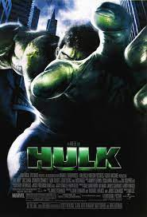
Hulk (2003)
Hulk is a 2003 American superhero film based on the Marvel Comics character of the same name, directed by Ang Lee and written by James Schamus, Michael
France, and John Turman from a story by Schamus. It stars Eric Bana as Bruce Banner/Hulk, alongside Jennifer Connelly, Sam Elliott, Josh Lucas, and Nick
Nolte. The film explores Bruce Banner's origins. After a lab accident involving gamma radiation, he transforms into a giant, green-skinned creature known
as the "Hulk" whenever stressed or emotionally provoked. The United States military pursues him, and he clashes with his biological father, who has dark
plans for his son.Development for the film started as far back as 1990. At one point, Joe Johnston and then Jonathan Hensleigh were to direct the movie.
Hensleigh, John Turman, Michael France, Zak Penn (who would later write The Incredible Hulk), J. J. Abrams, Michael Tolkin, David Hayter, Scott Alexander,
and Larry Karaszewski wrote more scripts before Ang Lee and James Schamus' involvement. From March to August 2002, Hulk was primarily shot in California,
mainly in the San Francisco Bay Area.The film was released on June 20, 2003, and grossed $245 million worldwide, becoming one of the highest-grossing films
of 2003. It received mixed reviews from critics, with Rotten Tomatoes' critical consensus calling it an ambitious and stylish film that focuses too much on
dialogue at the cost of action. A planned sequel was repurposed as a reboot titled The Incredible Hulk, and released on June 13, 2008, as the second film
in the Marvel Cinematic Universe.
Read more...
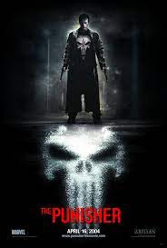
The Punisher (2004)
The Punisher is a 2004 American vigilante action film based on the Marvel Comics character of the same name, directed by Jonathan Hensleigh, written by
Hensleigh and Michael France, and starring Thomas Jane as the antihero Frank Castle and John Travolta as Howard Saint, a crime boss who orders the death of
Castle's entire family.The film's story and plot were mainly based on two Punisher comic book stories: the 1994 miniseries The Punisher: Year One by
writers Dan Abnett and Andy Lanning, and the 2000-01 miniseries Welcome Back, Frank by writer Garth Ennis, though some scenes were derived from other
Punisher stories, such as Marvel Preview Presents: The Punisher #2, Marvel Super Action Featuring: The Punisher #1, The Punisher War Zone, and The Punisher
War Journal. The Punisher was shot on location in Tampa, Florida and environs in mid to late 2003. It was distributed by Lions Gate Films in North America,
although Artisan Entertainment, which released a 1989 film adaptation of the same name on DVD, financed and co-distributed the film with eventual Artisan
owner Lionsgate, while Columbia Pictures distributed the film in non-North American territories.[3] Screenwriter Jonathan Hensleigh agreed to helm the film
during its development stage despite a dispute with Marvel Studios, marking his directorial debut.The film was released on April 16, 2004, by Lions Gate
Films and Columbia Pictures, grossing $13 million in the United States over its opening weekend, and reached a total gross of $54 million against a budget
of $33 million. It has a 29% approval rating on Rotten Tomatoes.[6] Marvel Comics and Lionsgate began development on a sequel, The Punisher 2, which
instead became the 2008 reboot Punisher: War Zone after Jane and Hensleigh left the project due to creative differences. This was the final film produced
by Artisan Entertainment for theatrical distribution.
Read more...

Spider-Man 2 (2004)
Spider-Man 2 is a 2004 American superhero film directed by Sam Raimi and written by Alvin Sargent from a story by Alfred Gough, Miles Millar and Michael
Chabon. Based on the fictional Marvel Comics character of the same name, it is the second installment in Raimi's Spider-Man trilogy and the sequel to
Spider-Man (2002), starring Tobey Maguire alongside Kirsten Dunst, James Franco, Alfred Molina, Rosemary Harris, and Donna Murphy. Set two years after the
events of Spider-Man, the film finds Peter Parker struggling to manage both his personal life and his duties as Spider-Man, which affects his civilian life
dramatically. Meanwhile scientist and Peter's mentor Dr. Otto Octavius becomes a diabolical villain after a failed experiment kills his wife and leaves him
neurologically fused to mechanical tentacles. Spider-Man must stop him from recreating the dangerous experiment while dealing with an existential crisis
between his dual identities that appears to be stripping him of his powers.Principal photography began in April 2003 in New York City and also took place
in Los Angeles. Reshoots took place later that year and concluded in December.Spider-Man 2 was released in both conventional and IMAX theaters on June 30,
2004. It received widespread acclaim from critics, who praised its emotional weight and visual effects, as well as Maguire and Molina's performances and
Raimi's direction, and grossed $789 million worldwide, making it the third-highest-grossing film of the year. The film won Best Visual Effects at the 77th
Academy Awards, and was also nominated for Best Sound Mixing and Best Sound Editing; furthermore, it received five awards at the Saturn Awards, including
Best Fantasy Film and Best Director for Raimi. The film is widely regarded as one of the greatest superhero films ever made and a blueprint for future
movies in the genre.[a] Its success led to Spider-Man 3 (2007). Maguire and Molina reprised their roles in the Marvel Cinematic Universe (MCU) film
Spider-Man: No Way Home (2021), which dealt with the concept of the multiverse and linked the Raimi trilogy to the MCU.
Read more...

Blade : Trinity (2004)
Blade: Trinity is a 2004 American superhero film written and directed by David S. Goyer, who also wrote the screenplays to Blade and Blade II. It stars
Wesley Snipes as Blade, based on the Marvel Comics character of the same name, who also produced with Goyer, Peter Frankfurt and Lynn Harris, with a
supporting cast of Ryan Reynolds, Jessica Biel, Kris Kristofferson, Dominic Purcell, Parker Posey and Triple H. The third and final installment in the
Blade trilogy, the war between humans and vampires continues. However, the human-vampire hybrid Blade has been framed for countless murders by the vampire
leader Danica Talos, who's determined to lead her bloodthirsty compatriots to victory. Now, Blade must team up with a band of rogue vampire hunters to save
humanity from his most challenging enemy yet: Dracula.Blade: Trinity was released in the United States on December 8, 2004.The film grossed $132 million at
the box office worldwide on a budget of $65 million and received mostly negative reviews from critics for its formulaic themes, directing and acting; it is
the worst-reviewed film in the trilogy. The film was followed by 2006's Blade: The Series, and also marks Reynolds' first superhero role, as well as his
first collaboration with Marvel Entertainment. Marvel regained the film rights to the character in 2012.
Read more...
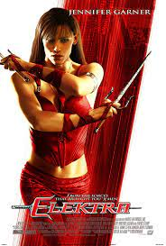
Elektra (2005)
Elektra is a 2005 superhero film directed by Rob Bowman. It is a spin-off from the 2003 film Daredevil, starring the Marvel Comics character Elektra
Natchios (portrayed by Jennifer Garner). The story follows Elektra, an assassin who must protect a man and his prodigy daughter from another assassin who
was hired by The Hand.For the screenplay, Zak Penn, Stuart Zicherman, and Raven Metzner received "written by" credit. Mark Steven Johnson received credit
for "motion picture characters" and Frank Miller for "comic book characters". Filming started around May 2004 in Vancouver.The film was released on January
14, 2005. Upon its release, Elektra was a commercial and critical failure, grossing $56 million against a production budget of $43–65 million. It received
negative reviews from critics, who found the script and storyline lacking, but many praised Garner's performance as well as the action sequences.
Read more...

Fantastic Four (2005)
Fantastic Four (sometimes stylized as Fantastic 4) is a 2005 American superhero film based on the Marvel Comics team of the same name. It was directed by
Tim Story, and released by 20th Century Fox. The film stars Ioan Gruffudd, Jessica Alba, Chris Evans, Michael Chiklis, Julian McMahon and Kerry Washington.
This was the second live-action Fantastic Four film to be filmed. A previous attempt, titled The Fantastic Four, was a B-movie produced by Roger Corman that
ultimately went unreleased. Fantastic Four was released in the United States on July 8, 2005. It received mixed to negative reviews but was a commercial
success. A sequel, Fantastic Four: Rise of the Silver Surfer, was released in 2007. A reboot was released in 2015.
Read more...

X-Men 3 : The Last Stand (2006)
X-Men: The Last Stand[6] (also marketed as X3 or X-Men 3) is a 2006 superhero film based on the X-Men superhero team introduced in Marvel Comics. It is the
sequel to 2003's X2, as well as the third installment in the 20th Century Fox X-Men film series, and was directed by Brett Ratner and written by Simon
Kinberg and Zak Penn. It features an ensemble cast including Hugh Jackman, Halle Berry, Ian McKellen, Famke Janssen, Anna Paquin, Kelsey Grammer, James
Marsden, Rebecca Romijn, Shawn Ashmore, Aaron Stanford, Vinnie Jones and Patrick Stewart. The film's script is loosely based on two X-Men comic book story
arcs: "The Dark Phoenix Saga" by writer Chris Claremont and artist John Byrne, and "Gifted" by writer Joss Whedon and artist John Cassaday, with a plot
that revolves around a "mutant cure" that causes serious repercussions among mutants and humans, and on the resurrection of Jean Grey.Bryan Singer, who had
directed the two previous films, X-Men (2000) and X2, decided to leave the sequel to work on Superman Returns. X2 composer John Ottman and X2 writers Dan
Harris and Michael Dougherty also left to work on Superman Returns, as did James Marsden, who had very limited screen time in The Last Stand before his
character was killed off due to his departure from the film. Singer had not even defined the storyline for a third film. Matthew Vaughn, who was initially
hired as the new director, left due to personal and professional issues, and was replaced with Ratner. Filming took place from August 2005 to January 2006
with a budget of $210 million, and was consequently the most expensive film made at the time of its release. It had extensive visual effects created by 11
different companies.
Read more...

Ghost Rider (2007)
Ghost Rider is a 2007 American superhero film[2] based on the Marvel Comics character of the same name. The film was written and directed by Mark Steven
Johnson, known for helming 2003's Daredevil previously, and stars Nicolas Cage as Johnny Blaze / Ghost Rider, with Eva Mendes, Wes Bentley, Sam Elliott,
Donal Logue, Matt Long, and Peter Fonda in supporting roles.Ghost Rider was released on February 16, 2007, in the United States. The film was met with
negative reviews from critics, but was a box office success, earning $228.7 million worldwide on a $110 million budget. Ghost Rider was released on DVD,
Blu-ray and UMD on June 12, 2007. A sequel, titled Ghost Rider: Spirit of Vengeance, was released on February 17, 2012, with Cage reprising his role.
Read more...

Spider-Man 3 (2007)
Spider-Man 3 is a 2007 American superhero film based on the Marvel Comics character Spider-Man. It was directed by Sam Raimi from a screenplay by Raimi,
his older brother Ivan and Alvin Sargent. It is the final installment in Raimi's Spider-Man trilogy, and the sequel to Spider-Man (2002) and Spider-Man 2
(2004). The film stars Tobey Maguire as Peter Parker / Spider-Man, alongside Kirsten Dunst, James Franco, Thomas Haden Church, Topher Grace, Bryce Dallas
Howard, James Cromwell, Rosemary Harris, and J. K. Simmons. The film also marks the final film appearance of Cliff Robertson before his retirement and
death in 2011. Set a year after the events of Spider-Man 2, the film follows Peter Parker as he prepares for his future with Mary Jane Watson, while facing
three new villains: Uncle Ben's true killer, Flint Marko, who becomes Sandman after a freak accident; Harry Osborn, his former friend, who is now aware of
Peter's identity and seeks to avenge his father; and Eddie Brock, a rival photographer who subsequently transforms into Venom. Peter also faces his
greatest challenge when he bonds with an extraterrestrial symbiote that increases his abilities but amplifies his anger and other negative traits.
Development of Spider-Man 3 began immediately after the successful release of Spider-Man 2 for a 2007 release. During pre-production, Raimi originally
wanted two villains, Harry Osborn and Sandman. At the request of producer Avi Arad, he added Venom to the list and the producers also requested the
addition of Gwen Stacy. Principal photography for the film began in January 2006, and took place in Los Angeles and Cleveland before moving to New York
City from May until July 2006. Additional pick-up shots were made after August and the film wrapped in October 2006. During post-production, Sony Pictures
Imageworks created over 900 visual effects shots. With an estimated production budget of $258–350 million, it was the most expensive film ever made at the
time of its release.
Read more...

Fantastic Four : Rise Of The Silver Surfer (2007)
Fantastic Four: Rise of the Silver Surfer (titled Fantastic 4: Rise of the Silver Surfer on home media) is a 2007 American superhero film, and sequel to the
2005 film Fantastic Four. Both films are based on the Fantastic Four comic book and were directed by Tim Story. The film stars Ioan Gruffudd, Jessica Alba,
Chris Evans, and Michael Chiklis as the title characters, with Julian McMahon, Kerry Washington, Andre Braugher, Beau Garrett, Doug Jones and Laurence
Fishburne in supporting roles. The plot follows the Fantastic Four (and Doctor Doom) as they confront, and later ally with, the Silver Surfer to save Earth
from Galactus.The film was released on June 15, 2007 in North America. Despite a slightly improved critical reception from the first film, it also grossed
less at the box office than its predecessor. A third film was planned, but due to conflicts between the director and Jessica Alba, and the producers having
trouble finding a new director for a planned Silver Surfer spin-off, the franchise ended up in development hell.[3][4] The series was rebooted in 2015 with
the release of Fantastic Four to poor critical and commercial reception. Marvel Studios eventually claimed the film rights of the characters after the
acquisition of 21st Century Fox by Disney.
Read more...

Punisher : War Zone (2008)
Punisher: War Zone is a 2008 action thriller film based on the Marvel Comics character the Punisher, directed by Lexi Alexander. The film is a reboot that
follows the war waged by vigilante Frank Castle (Ray Stevenson) on crime and corruption, in particular on the disfigured mob boss known as Billy "Jigsaw"
Russotti (Dominic West), rather than a sequel to 2004's The Punisher.[5] It is the third feature film adaptation of The Punisher, the second reboot thereof
and the first of two films to be produced under the Marvel Knights production banner, which focuses on films for mature audiences. Punisher: War Zone was
released in North America by Lionsgate on December 5, 2008, and it was released in the United Kingdom by Sony Pictures Releasing on February 6, 2009 to
negative reviews and grossed $10 million worldwide, making it a commercial failure. Its related soundtrack hit the #23 slot on Billboard's Top Independent
Albums chart.It was the final Punisher film to be produced by an outside studio before the rights reverted to Marvel Studios, with Stevenson reprising his
role as Castle in The Super Hero Squad Show. A television series was later released on Netflix in 2017 and is set in the Marvel Cinematic Universe.
Read more...

X-Men Origins : Wolverine (2009)
X-Men Origins: Wolverine is a 2009 American superhero film based on the Marvel Comics fictional character Wolverine. It is the fourth installment of the
X-Men film series, the first installment of the Wolverine trilogy within the series, and a spin-off/prequel to X-Men (2000) and X2 (2003). The film was
directed by Gavin Hood, written by David Benioff and Skip Woods, and produced by Hugh Jackman, who stars as the titular character, alongside Liev Schreiber,
Danny Huston, Dominic Monaghan, and Ryan Reynolds. The film's plot details Wolverine's childhood as James Howlett, his time with Major William Stryker's
Team X, the bonding of Wolverine's skeleton with the indestructible metal adamantium during the Weapon X program and his relationship with his half-brother
The film was mostly shot in Australia and New Zealand, with Canada also serving as a location. Filming took place from January to May 2008. Production and
post-production were troubled, with delays due to the weather and Jackman's other commitments, an incomplete screenplay that was still being written in Los
Angeles while principal photography rolled in Australia, conflicts arising between director Hood and Fox's executives over the film's direction, and an
unfinished workprint being leaked on the internet a month before the film's debut.Victor Creed.
Read more...

X-Men : The First Class (2011)
X-Men: First Class (stylized on-screen as X: First Class) is a 2011 American superhero film based on the X-Men characters appearing in Marvel Comics. It is
the fourth mainline installment in the X-Men film series and the fifth installment overall. It was directed by Matthew Vaughn and produced by Bryan Singer,
and stars James McAvoy, Michael Fassbender, Rose Byrne, Jennifer Lawrence, January Jones, Oliver Platt, and Kevin Bacon. At the time of its release, it was
intended to be a franchise reboot[7] and contradicted the events of X-Men Origins: Wolverine (2009); however, the follow-up film X-Men: Days of Future Past
(2014) retconned First Class into a prequel to X-Men (2000). First Class is set primarily in 1962 during the Cuban Missile Crisis, and focuses on the
relationship between Charles Xavier and Erik Lehnsherr / Magneto, and the origin of their groups—the X-Men and the Brotherhood of Mutants, respectively, as
they deal with the Hellfire Club led by Sebastian Shaw, a mutant supremacist bent on enacting nuclear war.Producer Lauren Shuler Donner first thought of a
prequel based on the young X-Men during the production of X2; producer Simon Kinberg later suggested to 20th Century Fox an adaptation of the comic series
X-Men: First Class, although the film does not follow the comic closely. Singer, who had directed both X-Men and X2, became involved with the project in
2009, but he could only produce and co-write First Class due to his work on other projects. Vaughn, who was previously attached to both X-Men: The Last
Stand and Thor, became the director, and also wrote the final script with his writing partner Jane Goldman. First Class replaced a Magneto prequel film
that had been in development, but had entered development hell; the Writers Guild of America arbitration gave a story credit to Magneto writer Sheldon
Turner. Principal photography began in August 2010 and concluded in December, with additional filming completed in April 2011. Locations included Oxford,
the Mojave Desert and Georgia, with soundstage work done in both Pinewood Studios and the 20th Century Fox stages in Los Angeles. The depiction of the
1960s drew inspiration from the James Bond films of the period.
Read more...

Ghost Rider : Spirit of Vengeance (2011)
Ghost Rider: Spirit of Vengeance is a 2011 American superhero film based on the Marvel Comics antihero Ghost Rider. It is a standalone sequel to the 2007
film Ghost Rider[7] and features Nicolas Cage reprising his role as Johnny Blaze / Ghost Rider[8] with supporting roles portrayed by Ciarán Hinds, Violante
Placido, Johnny Whitworth, Christopher Lambert, and Idris Elba. The film was directed by Mark Neveldine and Brian Taylor, from a screenplay written by
Scott M. Gimple, Seth Hoffman, and David S. Goyer. Released publicly for one night on December 11, 2011, Ghost Rider: Spirit of Vengeance had its wide
commercial release on February 17, 2012 in 2D and 3D.The film experienced worse critical reception than the first film, with criticism being aimed towards
the script, CGI, and acting.[9] The film grossed more than $132 million, against its $57–75 million production budget.
Read more...

The Amazing Spider-Man (2012)
The Amazing Spider-Man is a 2012 American superhero film based on the Marvel Comics character Spider-Man and sharing the title of the character's
longest-running comic book series of the same name. It is the fourth theatrical Spider-Man film produced by Columbia Pictures and Marvel Entertainment, a
reboot of the series following Sam Raimi's 2002–2007 Spider-Man trilogy, and the first of the two The Amazing Spider-Man films. The film was directed by
Marc Webb and written by James Vanderbilt, Alvin Sargent and Steve Kloves from a story by Vanderbilt, and stars Andrew Garfield as Peter Parker /
Spider-Man alongside Emma Stone, Rhys Ifans, Denis Leary, Campbell Scott, Irrfan Khan, Martin Sheen, and Sally Field. In the film, after Parker is bitten
by a genetically altered spider, he gains newfound, spider-like powers and ventures out to save the city from the machinations of the Lizard.Development of
the film began following the cancellation of Spider-Man 4 in January 2010, ending director Sam Raimi's Spider-Man film series that originally featured
Tobey Maguire as the titular superhero. Columbia Pictures opted to reboot the franchise with the same production team along with Vanderbilt to stay on with
writing the next Spider-Man film, while Sargent and Kloves helped with the script as well. During pre-production, the main characters were cast in 2010.
New designs were introduced from the comics, such as artificial web-shooters. Using Red Digital Cinema Camera Company's RED Epic camera, principal
photography started in December 2010 in Los Angeles before moving to New York City. The film entered post-production in April 2011. 3ality Technica
provided 3D image processing, while Sony Pictures Imageworks handled CGI effects. This was also the final American film to be scored by James Horner and
released during his lifetime, three years before his death on June 22, 2015 from an aircraft accident, as well as the penultimate film for both production
designer J. Michael Riva and one of the producers Laura Ziskin, who died on June 7, 2012, and June 12, 2011, respectively. J. Michael Riva's last film as
production designer was Django Unchained, released five months later and Ziskin's last film as producer was The Butler, released one year later in 2013.
Read more...
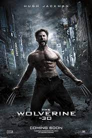
Wolverine (2013)
The Wolverine[b] is a 2013 superhero film featuring the Marvel Comics character Wolverine. It is the sixth installment in the X-Men film series, the second
installment in the trilogy of Wolverine films after X-Men Origins: Wolverine (2009), and a spin-off/sequel to X-Men: The Last Stand (2006). Directed by
James Mangold from a screenplay written by Scott Frank and Mark Bomback, based on the 1982 limited series Wolverine by Chris Claremont and Frank Miller, it
stars Hugh Jackman as Logan / Wolverine, alongside Rila Fukushima, Tao Okamoto, Hiroyuki Sanada, Famke Janssen, and Will Yun Lee. Following the events of
X-Men: The Last Stand, Logan travels to Japan, where he engages an old acquaintance in a struggle that has lasting consequences. Stripped of his healing
powers, Wolverine must battle deadly samurai while struggling with guilt over Jean Grey's death.The film's development began in 2009 after the release of
X-Men Origins: Wolverine. Christopher McQuarrie was hired to write a screenplay for The Wolverine in August 2009. In October 2010, Darren Aronofsky was
hired to direct the film. The project was delayed following Aronofsky's departure and the Tōhoku earthquake and tsunami in March 2011. In June 2011,
Mangold was brought on board to replace Aronofsky. Bomback was then hired to rewrite the screenplay in September 2011. The supporting characters were cast
in July 2012 with principal photography beginning at the end of the month around New South Wales before moving to Tokyo in August 2012 and back to New
South Wales in October 2012. The film was converted to 3D in post-production.
Read more...

The Amazing Spider-Man 2 (2014)
The Amazing Spider-Man 2 (internationally titled The Amazing Spider-Man 2: Rise of Electro)[6] is a 2014 American superhero film based on the Marvel Comics
character Spider-Man. The film was directed by Marc Webb and produced by Avi Arad and Matt Tolmach. It is the fifth theatrical Spider-Man film produced by
Columbia Pictures and Marvel Entertainment, the sequel to The Amazing Spider-Man (2012), and the final film in The Amazing Spider-Man series. The studio
hired James Vanderbilt to write the screenplay and Alex Kurtzman and Roberto Orci to rewrite it.[7][8] The film stars Andrew Garfield as Peter Parker /
Spider-Man, alongside Emma Stone, Jamie Foxx, Dane DeHaan, Campbell Scott, Embeth Davidtz, Colm Feore, Paul Giamatti, and Sally Field. In the film, Peter
Parker tries to protect Gwen Stacy as he investigates his parents' death, while also dealing with the supervillain Electro and the return of his childhood
friend Harry Osborn, who is dying from a deadly genetic disease.Development of The Amazing Spider-Man 2 began after the success of The Amazing Spider-Man.
DeHaan, Giamatti, Felicity Jones, and Chris Cooper were cast between December 2012 and February 2013. Filming took place in New York City from February to
June 2013. The film was released in 2D, 3D, and IMAX 3D on May 2, 2014, in the United States with two international premieres being held between March 31
and April 10 of that year. It received mixed reviews from critics and audiences, with praise for the special effects, chemistry between Stone and Garfield,
the action scenes, and Hans Zimmer's musical score,[9][10] although the script and length received criticism.[11][12][13] Foxx's portrayal of Electro was
polarizing.[14] It grossed $709 million worldwide, making it the ninth-highest-grossing film of 2014, but the lowest-grossing live-action Spider-Man film to
date.
Read more...

X-Men : Days of Future Past (2014)
X-Men: Days of Future Past is a 2014 American superhero film directed and produced by Bryan Singer and written by Simon Kinberg from a story by Kinberg,
Jane Goldman, and Matthew Vaughn. The film is based on the fictional X-Men characters that appear in Marvel Comics, the fifth mainline installment of the
X-Men film series, a sequel to X-Men: The Last Stand (2006) and X-Men: First Class (2011), a follow-up to The Wolverine (2013), and the seventh installment
overall. It stars an ensemble cast, including Hugh Jackman, James McAvoy, Michael Fassbender, Jennifer Lawrence, Halle Berry, Anna Paquin, Elliot Page,[a]
Peter Dinklage, Ian McKellen, and Patrick Stewart. The story, inspired by the 1981 Uncanny X-Men storyline "Days of Future Past" by Chris Claremont and
John Byrne, focuses on two time periods, with Logan traveling back in time to 1973 to change history and prevent an event that results in unspeakable
destruction for both humans and mutants.Vaughn had directed X-Men: First Class and was set to return in Days of Future Past before leaving for Kingsman:
The Secret Service and the 2015 version of Fantastic Four. Thus Singer, who had directed the first two X-Men films, made his return as a director, and
brought along most of the crew from those productions. With a budget of $205 million principal photography began in Montreal, Quebec in April 2013 and
concluded in August the same year, with additional filming and pick-ups taking place in November 2013 and February 2014. Twelve companies handled the
visual effects.
Read more...

Fantastic Four (2015)
Fantastic Four (styled as FANT4STIC) is a 2015 American superhero film based on the Marvel Comics superhero team of the same name, and is a reboot of the
Fantastic Four film franchise. Directed by Josh Trank, who co-wrote the screenplay with Jeremy Slater and Simon Kinberg, it stars Miles Teller, Michael B.
Jordan, Kate Mara, Jamie Bell and Toby Kebbell. The film follows a group of intelligent teenagers that build a transdimensional portal, causing them to
gain superhuman abilities. It was the first Fantastic Four film that Bernd Eichinger did not produce due to his death in 2011.After Fantastic Four: Rise of
the Silver Surfer (2007) disappointed at the box office, Fox announced plans to reboot the franchise, and development of the film began in 2009. Trank was
hired to direct in July 2012 and the principal characters were cast in January 2014. Principal photography began in May 2014 in Baton Rouge, Louisiana and
lasted for two months. Dissatisfied with the director's original cut, Fox executives mandated reshoots, which took place in January 2015.Fantastic Four
premiered at Williamsburg Cinemas in New York City on August 4, 2015, and was released on August 7 in the United States. The film was panned by critics,
with criticism aimed at the dark tone, direction, acting, editing, lack of humor, character development, pacing, writing, unfaithfulness to the source
material, story, visuals and CGI though there was some praise for the musical score and some performances. It grossed $168 million worldwide against a
production budget of $155 million, losing 20th Century Fox over $80 million, becoming a box office bomb. At the 36th Golden Raspberry Awards, it won
several awards, including Worst Director and Worst Picture. Trank also voiced his displeasure with the final film, blaming the studio's interference.
Read more...
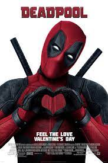
Deadpool (2016)
Deadpool is a 2016 American superhero film based on the Marvel Comics character of the same name. Distributed by 20th Century Fox, it is a spin-off in the
X-Men film series and the eighth installment overall. Directed by Tim Miller from a screenplay by Rhett Reese and Paul Wernick, it stars Ryan Reynolds in
the title role alongside Morena Baccarin, Ed Skrein, T. J. Miller, Gina Carano, and Brianna Hildebrand. In the film, Wade Wilson hunts the man who gave him
mutant abilities and a scarred physical appearance, becoming the antihero Deadpool.Development of a Deadpool film starring Reynolds began in February 2004,
before he played the character in X-Men Origins: Wolverine in 2009. Reese and Wernick were hired for a spinoff in 2010 and worked with Reynolds to adapt
the character more faithfully (including his fourth wall breaking) after the portrayal in Wolverine was criticized. Miller was hired in 2011, marking his
directorial debut. An enthusiastic response to leaked test footage he created with Reynolds led to a green-light from Fox in 2014. Additional casting began
in early 2015, and filming took place in Vancouver, British Columbia, from March to May of that year. Several vendors provided visual effects for the film,
ranging from the addition of blood and gore to the creation of the CG character Colossus.Deadpool was released in the United States on February 12, 2016,
after an unconventional marketing campaign. The film achieved both financial and critical success. It earned over $782 million against a $58 million
budget, becoming the ninth-highest-grossing film of 2016 and breaking numerous records, including highest-grossing X-Men film and R-rated film at the time.
Critics praised Reynolds' performance, the film's style and faithfulness to the comics, along with its action sequences, though some criticized the plot as
formulaic and were divided on the film's adult humor. It received many awards and nominations, including two Critics' Choice Awards and two Golden Globe
nominations. A sequel, Deadpool 2, was released in 2018 to comparable critical and commercial success. Following the acquisition of 21st Century Fox by
Disney, a third film is in development at Marvel Studios.
Read more...

X-Men : Apocalypse (2016)
X-Men: Apocalypse is a 2016 American superhero film directed and produced by Bryan Singer and written by Simon Kinberg from a story by Singer, Kinberg,
Michael Dougherty, and Dan Harris. The film is based on the fictional X-Men characters that appear in Marvel Comics. It is the sixth mainline installment
in the X-Men film series and the ninth installment overall. It is the sequel to X-Men: Days of Future Past (2014) and stars James McAvoy, Michael
Fassbender, Jennifer Lawrence, Oscar Isaac, Nicholas Hoult, Rose Byrne, Tye Sheridan, Sophie Turner, Olivia Munn, and Lucas Till. In the film, the ancient
mutant En Sabah Nur / Apocalypse is inadvertently revived in 1983, and he plans to wipe out modern civilization and take over the world, leading the X-Men
to try to stop him and defeat his team of mutants.The film was announced by Singer in December 2013, with Kinberg, Dougherty, and Harris attached to
develop the story. Casting began in October 2014, while principal photography commenced in April 2015 in Montreal and ended in August of the same year.
X-Men: Apocalypse premiered in London on May 9, 2016, and was released in the United States on May 27, 2016 in 3D and 2D, and in IMAX 3D in select
international markets. The film received mixed reviews, with critics praising its themes and cast performances, while criticizing its overloaded action,
formulaic plot and portrayal of Apocalypse. A sequel, titled Dark Phoenix, was released on June 7, 2019.
Read more...
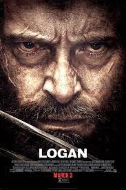
Logan (2017)
Logan is a 2017 American superhero film starring Hugh Jackman in his final performance as the titular character. It is the tenth film in the X-Men film
series and the third and final installment in the Wolverine trilogy following X-Men Origins: Wolverine (2009) and The Wolverine (2013). The film, which
takes inspiration from the "Old Man Logan" comics storyline by Mark Millar and Steve McNiven, follows an aged Wolverine and an extremely ill Charles Xavier
who defends a young mutant named Laura from the villainous Reavers led by Donald Pierce and Zander Rice.[4][5][6] The film is produced by 20th Century
Fox, Marvel Entertainment, TSG Entertainment and The Donners' Company, and distributed by 20th Century Fox.[7][8] It is directed by James Mangold, who
co-wrote the screenplay with Michael Green and Scott Frank, from a story by Mangold.[9] In addition to Jackman, the film also stars Patrick Stewart,
Richard E. Grant, Boyd Holbrook, Stephen Merchant, and Dafne Keen.Principal photography began in Louisiana on May 2, 2016, and wrapped on August 13, 2016,
in New Mexico[13][14][15] The locations used for Logan were mainly in Louisiana, New Mexico, and MississippiLogan premiered at the 67th Berlin
International Film Festival on February 17, 2017, and was theatrically released in the United States on March 3, 2017, in IMAX and standard formats. The
film received critical acclaim, with strong praise for its emotional depth and the performances of Jackman, Keen and Stewart.[19] It became the
best-reviewed film in the X-Men franchise, with many critics calling it one of the greatest superhero films ever made,[20] and it was selected by the
National Board of Review as one of the top ten films of 2017.[21] It was nominated for Best Adapted Screenplay at the 90th Academy Awards, becoming the
first live-action superhero film to be nominated for screenwriting.[22][23] It grossed $619.2 million worldwide and became the third-highest-grossing
R-rated film at the time of its release.
Read more...

Deadpool 2 (2018)
Deadpool 2 is a 2018 American superhero film based upon the Marvel Comics character Deadpool. It is a spin-off in the X-Men film series, a sequel to 2016's
Deadpool, and the eleventh installment overall. The film was directed by David Leitch from a screenplay by Rhett Reese, Paul Wernick, and Ryan Reynolds,
who stars in the title role alongside Josh Brolin, Morena Baccarin, Julian Dennison, Zazie Beetz, T.J. Miller, Brianna Hildebrand, and Jack Kesy. In the
film, Deadpool forms the X-Force to protect a young mutant from the time-traveling soldier Cable.Plans for a sequel to Deadpool began before the original
film's release, and were confirmed in February 2016. Though the original creative team of Reynolds, Reese, Wernick, and director Tim Miller were quickly
set to return for the second film, Miller left the project in October 2016 due to creative differences with Reynolds and was soon replaced by Leitch. An
extensive casting search took place to fill the role of Cable, with Brolin ultimately cast. Filming took place in British Columbia from June to October
2017. The film is dedicated to stuntwoman Joi "SJ" Harris, who died in a motorcycle accident during filming.Deadpool 2 was released in the United States
on May 18, 2018 by 20th Century Fox. The film outgrossed its predecessor, earning over $785 million worldwide, becoming the ninth-highest-grossing film of
2018, the highest-grossing film in the X-Men series, as well as the highest-grossing R-rated film at the time. The film received positive reviews from
critics, who praised its humor, cast performances, story, and action sequences but criticized its tone, script, and recycled jokes. A PG-13-rated version
of the film, titled Once Upon a Deadpool, was released on December 12, 2018 to mixed reviews. Following the acquisition of 21st Century Fox by Disney, a
third Deadpool film is being developed by Marvel Studios as part of the Marvel Cinematic Universe.
Read more...

Venom (2018)
Venom is a 2018 American superhero film featuring the Marvel Comics character of the same name, produced by Columbia Pictures in association with Marvel[5]
and Tencent Pictures. Distributed by Sony Pictures Releasing, it is the first film in Sony's Spider-Man Universe (SSU). Directed by Ruben Fleischer from a
screenplay by Jeff Pinkner, Scott Rosenberg, and Kelly Marcel, it stars Tom Hardy as Eddie Brock and Venom alongside Michelle Williams, Riz Ahmed, Scott
Haze, and Reid Scott. In the film, struggling journalist Brock gains superpowers after becoming the host of an alien symbiote, Venom, whose species plans
to invade Earth.After Venom's appearance in Spider-Man 3 (2007), Sony attempted to develop a spin-off film based on the character but it did not move
forward due to issues with Sony's ongoing Spider-Man franchise. In March 2016, work began on a new version that would start a new shared universe
featuring the non-Spider-Man Marvel characters that the studio possessed film rights to. Sony also intended for Venom to share the world of the Marvel
Cinematic Universe's Spider-Man: Homecoming (2017), but ultimately distanced the film from Spider-Man. In March 2017, Rosenberg and Pinkner were set to
write, with Fleischer and Hardy added in May. Filming took place from October 2017 to January 2018 in Atlanta, New York City, and San Francisco. The film
was primarily inspired by the comic book miniseries Venom: Lethal Protector (1993) and the story arc "Planet of the Symbiotes" (1995).Venom premiered at
Regency Village Theater on October 1, 2018, and was theatrically released in the United States on October 5, 2018. The film received generally negative
reviews from critics for its narrative, inconsistent tone, and lack of a stronger connection to Spider-Man, while Hardy's performance received mixed
reviews. The film was a box office success, becoming the seventh-highest-grossing film of 2018 with over $856 million worldwide and setting several box
office records for an October release. A sequel, Venom: Let There Be Carnage, was released in October 2021, while a third film is in development.
Read more...

Dark Phoenix (2019)
Dark Phoenix (later marketed and released on home media as X-Men: Dark Phoenix) is a 2019 American superhero film based on the Marvel Comics X-Men
characters. It is a sequel to 2016's X-Men: Apocalypse, the seventh mainline installment in the X-Men film series, and the twelfth installment overall.
It was written, co-produced, and directed by Simon Kinberg (in his feature film directorial debut) and stars an ensemble cast featuring James McAvoy,
Michael Fassbender, Jennifer Lawrence, Nicholas Hoult, Sophie Turner, Tye Sheridan, Alexandra Shipp, and Jessica Chastain. Dark Phoenix tells the origin
story of Jean Grey's transformation into the Phoenix, which is triggered by a cosmic force that enhances her psychic abilities. The story follows Jean's
gradual descent into madness after the force unleashes repressed traumatic memories from her childhood that causes both her emotions and powers to become
unstable, threatening the people she loves.After X-Men: Days of Future Past (2014) erased the events of X-Men: The Last Stand (2006) from the series'
timeline, Kinberg expressed interest in a new adaptation of Chris Claremont and John Byrne's "The Dark Phoenix Saga" in a future film that would be more
faithful than his previous attempt with The Last Stand, which was met with a mixed reception, with even Kinberg and co-writer Zak Penn ultimately
unimpressed with the film. The new adaptation was confirmed as a follow-up to Apocalypse in 2016. Kinberg signed on as director in June 2017, with the
majority of the cast set to return from Apocalypse. Filming began later that month in Montreal and was completed in October 2017; the entire third act was
reshot in late 2018 following poor test screenings. The film was dedicated to the memory of X-Men co-creator Stan Lee, who died on November 12, 2018.Dark
Phoenix was theatrically released in the United States on June 7, 2019, produced by 20th Century Fox and distributed by Walt Disney Studios Motion
Pictures. The film grossed $252 million worldwide on a $200 million production budget and lost an estimated $133 million after marketing and distribution
costs, making it one of the biggest box-office bombs of all time. It also received negative reviews for its screenplay and pacing while praising the
visuals, score and cast performances.
Read more...

The New Mutants (2020)
The New Mutants is a 2020 American superhero horror film based on the Marvel Comics team of the same name. It is a spin-off in the X-Men film series and
the thirteenth and final installment overall. The film was directed by Josh Boone from a screenplay he wrote with Knate Lee, and it stars Maisie Williams,
Anya Taylor-Joy, Charlie Heaton, Alice Braga, Blu Hunt, and Henry Zaga. In the film, a group of young mutants held in a secret facility fight to save
themselves.Boone and Lee first began work on the film after Boone completed The Fault in Our Stars (2014). The pair pitched a potential film trilogy to
X-Men producer Simon Kinberg, and in May 2015 they were officially signed on to the project. Taylor-Joy and Williams were rumored to be cast in March 2016
and were confirmed over a year later when the rest of the cast filled out. Filming took place in Boston, Massachusetts, from July to September 2017,
primarily at Medfield State Hospital, with an April 2018 release in mind. The film was then delayed while reshoots were planned and Disney began the
process of acquiring production company 20th Century Fox. After the acquisition was completed, Boone returned to work on the film, and it was completed
without reshoots in March 2020.The New Mutants was theatrically released in the United States on August 28, 2020, by 20th Century Studios. The film
received mixed-to-negative reviews from critics and bombed at the box office, grossing $49 million worldwide against its production budget of $67–80
million.
Read more...

Venom 2 : Let There Be Carnage (2021)
Venom: Let There Be Carnage is a 2021 American superhero film featuring the Marvel Comics character Venom, produced by Columbia Pictures in association
with Marvel. Distributed by Sony Pictures Releasing, it is the second film in Sony's Spider-Man Universe and the sequel to Venom (2018). The film was
directed by Andy Serkis from a screenplay by Kelly Marcel, based on a story she wrote with Tom Hardy, who stars as Eddie Brock and Venom alongside
Michelle Williams, Naomie Harris, Reid Scott, Stephen Graham, and Woody Harrelson. In the film, Brock and the alien symbiote Venom must face serial killer
Cletus Kasady (Harrelson) after he becomes the host of an offshoot of Venom named Carnage.Venom was intended by Sony to be the start of a new shared
universe, and plans for a sequel began during production on the first film. Harrelson was cast to make a brief appearance as Kasady at the end of Venom,
with the intention of him becoming the villain Carnage in the sequel. Official work on the sequel began in January 2019, with Hardy and Harrelson
confirmed to return along with Marcel as writer. Serkis was hired as director that August, partly due to his experience working with CGI and motion
capture technology, which was an important part of portraying Venom and Carnage in the film. Filming took place at Leavesden Studios in England from
November 2019 to February 2020, with additional filming in San Francisco in February. The title was announced in April 2020.Venom: Let There Be Carnage
premiered in London on September 14, 2021, and was theatrically released in the United States on October 1. It was delayed multiple times from an initial
October 2020 date due to the COVID-19 pandemic. Despite earning less than its predecessor, the film was still a box office success and grossed over $506
million worldwide, making it the seventh-highest-grossing film of 2021. It received mixed reviews from critics, who praised the performances, action
sequences, and mid-credit scene, but criticized its story and CGI, while its short runtime and humor divided opinion.[5] Many critics deemed it an
improvement over its predecessor. A third Venom film is in development.
Read more...

Morbius (2022)
Morbius is a 2022 American superhero film based on the Marvel Comics character of the same name, produced by Columbia Pictures in association with Marvel.
Distributed by Sony Pictures Releasing, it is the third film in Sony's Spider-Man Universe (SSU). Directed by Daniel Espinosa and written by Matt Sazama
and Burk Sharpless, it stars Jared Leto as Dr. Michael Morbius, alongside Matt Smith, Adria Arjona, Jared Harris, Al Madrigal, and Tyrese Gibson. In the
film, Morbius and his surrogate brother Milo become living vampires after curing themselves of a rare blood disease.There were several attempts to bring
Morbius to the big screen since 1998, including joining the Blade franchise and having a solo film produced by Artisan Entertainment, neither of which
ever came to fruition. After announcing plans for a new shared universe of films inspired by Spider-Man related characters beginning with Venom (2018),
Sony began developing a film based on Morbius. Sazama and Sharpless had written a script by November 2017, and Leto and Espinosa officially joined in June
2018. Work on the film began at the end of the year with further casting, ahead of production starting in London in February 2019. Filming was confirmed
to have been completed by June 2019, with reshoots happening in Los Angeles the following February.Morbius premiered at the Plaza Carso in Mexico City on
March 10, 2022, and was theatrically released in the United States on April 1, 2022, after being delayed several times from an initial July 2020 date
primarily due to the COVID-19 pandemic. The film was a box office bomb, grossing over $163 million worldwide, and received largely negative reviews from
critics, with criticism towards its writing, visual effects, and post-credits scenes, though Smith's performance received some praise.
Read more...

Kraven the Hunter (2023)
Kraven the Hunter is an upcoming American superhero film based on the Marvel Comics character of the same name, produced by Columbia Pictures in
association with Marvel. Distributed by Sony Pictures Releasing, it is intended to be the fourth film in Sony's Spider-Man Universe (SSU). The film is
being directed by J. C. Chandor from a screenplay by Art Marcum & Matt Holloway and Richard Wenk, and stars Aaron Taylor-Johnson in the title role
alongside Ariana DeBose.Kraven the Hunter was considered for film appearances several times before Sony became interested in a standalone film for the
character, as part of their new shared universe, in 2017. Wenk was hired in August 2018, with Marcum and Holloway joining later. Chandor entered
negotiations to direct in August 2020, and was confirmed in May 2021 when Taylor-Johnson was cast. Further casting took place in early 2022, before
filming began in late March in London, England. Shooting also occurred in Iceland, and was expected to occur in Glasgow.Kraven the Hunter is scheduled to
be released in the United States on January 13, 2023.
Read more...
Marvel Serials and Short Films

Captain America (1944)
Captain America is a 1944 Republic black-and-white 15 chapter serial film loosely based on the Timely Comics (now Marvel Comics) character Captain America.
It was the last Republic serial made about a superhero. It also has the distinction of being the most expensive serial that Republic ever made. It stands
as the first theatrical release connected to a Marvel character; the next theatrical release featuring a Marvel hero would not occur for more than 30
years. It was the last live-action rendition of a Marvel character in any media until Spider-Man appeared in the Spidey Super Stories segment of the
children's TV series The Electric Company in 1974.The serial sees Captain America, really District Attorney Grant Gardner, trying to thwart the plans of
the Scarab, really museum curator Dr. Cyrus Maldor - especially regarding his attempts to acquire the "Dynamic Vibrator" and "Electronic Firebolt",
devices that could be used as super-weapons.In a rare plot element for Republic, the secret identity of the villain is known to the audience from the
beginning, if not to the characters in the serial. The studio's usual approach was the use of a mystery villain who was unmasked as one of the other
supporting characters only in the final chapter.
Read more...

Spider-Man (1978)
Spider-Man (Japanese: スパイダーマン, Hepburn: Supaidāman), also referred to as Japanese Spider-Man, is a 1978[1] film based on the Marvel Comics character
Spider-Man and also a spin-off from the Japanese Spider-Man television series. The film was released theatrically in Japan.The Iron Cross Army are
sabotaging oil-tankers with the help of their monster, the Sea-Devil, a semi-mechanical anthropomorphic swordfish with an ability to shoot torpedoes from
its mouth. Spider-Man employs the help of the interpol agent Jūzō Mamiya to help him stop the Iron Cross Army. Spider-Man uses his remote controlled
Marveller to prevent the Sea-Devil from bombing an industrial complex by making its missiles explode in the air. After that the monster's master makes it
grow giant and Spider-Man has to use his Marveller to transform into a giant mech to fight the monster, after they exchange blows Spider-Man uses the
mechs giant sword to disintegrate the Sea-Devil.
Read more...

The Consultant (2011)
Set after the events of Iron Man 2 and The Incredible Hulk,[2] Phil Coulson informs Jasper Sitwell that the World Security Council wishes for Emil Blonsky
to be released from prison to join the Avengers Initiative. They see him as a war hero and blame the devastation in Harlem on Bruce Banner. The Council
orders them to ask General Thaddeus "Thunderbolt" Ross to release Blonsky into S.H.I.E.L.D. custody. As Nick Fury does not want to release Blonsky, the
two agents decide to send a patsy to sabotage the meeting. Coulson reluctantly sends "The Consultant", Tony Stark, and (as partially depicted in the
post-credits scene of The Incredible Hulk) Stark approaches the disgraced Ross while he is drinking in a bar. Stark annoys Ross so much that he tries to
have Stark removed from the bar, until Stark buys the bar and has it scheduled for demolition. The next day, Coulson informs Sitwell that their plan
worked and Blonsky will remain in prison.At the 2011 San Diego Comic-Con, Marvel announced that The Consultant would appear exclusively on the Thor
Blu-ray release on September 13, 2011. It was directed by Leythum and written by Eric Pearson, with music by Paul Oakenfold.[2] The short was filmed
over 2–3 days.[17] Clark Gregg and Maximiliano Hernández return to portray Agent Phil Coulson and Agent Jasper Sitwell, respectively, from the films.
[2][18] They are joined via archive footage by Robert Downey, Jr. as Tony Stark / The Consultant, William Hurt as General Thaddeus "Thunderbolt" Ross, and
Tim Roth as Emil Blonsky in his Abomination form.[18] Co-producer Brian Winderbaum said the producers "wanted to paint a picture of S.H.I.E.L.D. pulling
the strings and being responsible for some of the events seen in the films. What better character to represent this idea than Agent Coulson, the first
S.H.I.E.L.D. agent we were introduced to in the first Iron Man film?"[2] Gregg said he was told about the short film program in the same phone call that
warned him Coulson would die in The Avengers. The actor noticed that the One-Shots could then provide more information on Coulson, to "build the audience'
s relationship [with] him" and make his death in the film more impactful. The Consultant was written after A Funny Thing Happened on the Way to Thor's
Hammer, due to the latter taking up 80% of the budget Marvel reserved for the two shorts, leaving a remaining budget "for two guys talking". To help with
this, Pearson included Sitwell in the short, who had a minor role in Thor, and had him and Coulson "brainstorming a way to deal with this red tape
bureaucratic politics of the Avengers Initiative".[

A Funny Thing Happened on the Way to Thor's Hammer (2011)
Set before the events of Thor,[2] Phil Coulson stops at a gas station on his way to Albuquerque, New Mexico. While Coulson shops for snacks in the back of
the station, two robbers enter and demand the money from the register. When the robbers ask whose car is outside, Coulson reveals himself, surrenders his
keys, and offers to surrender his pistol as well. As he turns over the gun, Coulson distracts the robbers and subdues both men in seconds. He then
nonchalantly pays for his snacks while advising the clerk not to mention his involvement to the police.A Funny Thing Happened on the Way to Thor's Hammer
was included on the Captain America: The First Avenger Blu-ray release on October 25, 2011.[19] It was directed by Leythum and written by Eric Pearson,
with music by Paul Oakenfold.[2] It was filmed over 2–3 days.[17] The short stars Clark Gregg reprising his role as Agent Phil Coulson,[2] and served to
showcase Coulson as "more than just an annoying bureaucrat" of S.H.I.E.L.D.

Item 47 (2012)
Item 47 is a 2012 American direct-to-video short film featuring the Marvel Comics organization S.H.I.E.L.D. (Strategic Homeland Intervention Enforcement
and Logistics Division), produced by Marvel Studios and distributed by Walt Disney Studios Home Entertainment on the home media release of Marvel's The
Avengers. It is a follow up and spin-off of The Avengers, and is the third Marvel One-Shot short film set in the Marvel Cinematic Universe (MCU), sharing
continuity with the films of the franchise. The film is directed by Louis D'Esposito, with a screenplay by Eric Pearson, and stars Lizzy Caplan, Jesse
Bradford, Maximiliano Hernández, and Titus Welliver, with Hernández reprising his role from the film series. In Item 47, two civilians come across a
Chitauri gun and use it to commit crimes.The short helped lead to ABC ordering a television series spin-off, Agents of S.H.I.E.L.D., which began airing
in September 2013.
Read more...

Agent Carter (2013)
Agent Carter is a 2013 American direct-to-video short film featuring the Marvel Comics character Peggy Carter, produced by Marvel Studios and distributed
by Walt Disney Studios Home Entertainment. It is a follow up to the 2011 feature film Captain America: The First Avenger, and is the fourth Marvel One-Shot
short film set in the Marvel Cinematic Universe (MCU), sharing continuity with the films of the franchise. The film is directed by Louis D'Esposito from a
screenplay by Eric Pearson, and stars Hayley Atwell as Peggy Carter, along with Bradley Whitford and Dominic Cooper. In Agent Carter, Peggy Carter sets
out on a solo mission to acquire the mysterious Zodiac while facing sexism post-World War II at the SSR, a precursor to S.H.I.E.L.D.A Marvel One-Shot
featuring Peggy Carter was in the works for some time before Atwell signed on to star in it, reprising her role from the Captain America films.
D'Esposito, co-president of Marvel Studios and an executive producer on the feature films, aimed to replicate the period setting of Captain America: The
First Avenger, while also giving the short a more modern, superhero feel. The film was a more ambitious production than previous One-Shots, with more
action scenes and visual effects required than previously. Several other characters from Marvel Cinematic Universe films also appear, including Cooper
reprising his role of Howard Stark.The short was released on the home media release of Iron Man 3, and was received positively by critics and the audience
from an earlier screening at San Diego Comic-Con. It won a Golden Reel Award. This response led to ABC ordering a television series expansion of the
short, Agent Carter, which aired from January 2015 to March 2016, over two seasons.
Read more...

All Hail The King (2014)
All Hail the King is a 2014 American direct-to-video short film featuring the Marvel Cinematic Universe (MCU) character Trevor Slattery, produced by Marvel
Studios and distributed by Walt Disney Studios Home Entertainment. It is a follow up and spin-off of Iron Man 3 (2013), and is the fifth Marvel One-Shot
short film set in the MCU, sharing continuity with the films of the franchise. The film is written and directed by Drew Pearce, and stars Ben Kingsley as
Slattery, alongside Scoot McNairy, Lester Speight, and Sam Rockwell. In All Hail the King, a documentary filmmaker (McNairy) interviews the infamous fake
terrorist Trevor Slattery while in jail.Development for a One-Shot centered on Slattery began during production of Iron Man 3, with Pearce eventually
conceiving an idea contingent on Kingsley willing to reprising his role from Iron Man 3, who was enthused to do so after reading the script. Filming
occurred in Los Angeles over three days, with Pearce later flying to Canada to film Rockwell's cameo as Justin Hammer, reprising the role from Iron Man 2
(2010).All Hail the King was released digitally and on the home media release of Thor: The Dark World (2013) in February 2014 and was positively received.
The story of Slattery, the Mandarin, and the Ten Rings is continued in the film Shang-Chi and the Legend of the Ten Rings (2021).
Read more...

Team Thor (2016)
After saving Earth with the Avengers, Thor takes a short break in Australia where he lives with a local office worker, Darryl Jacobson. As he does this, he
is interviewed by a film crew and talks about his daily life in Australia. Thor is seen visiting a kindergarten classroom, attempting to send emails with
Darryl's help to Tony Stark and Steve Rogers concerning their conflict,[a] and revealing his investigative board concerning the connections between the
Infinity Stones, the Avengers, Nick Fury, and Thanos. Later, Thor meets Bruce Banner at a cafe regarding not being contacted by Stark and Rogers. Banner
receives a phone call from Stark, who does not appear to want to reach out or talk to Thor. As such, Thor decides to start his own team, Team Thor, with
him and Darryl.Team Thor was first screened at the 2016 San Diego Comic-Con,[12] before being released online on August 28, 2016.[13] It was also released
on the home media of Captain America: Civil War (2016) in September 2016.[13][14] The film is also known as While You Were Fighting: A Thor Mockumentary.
[15] The mockumentary was said to have been produced by the "New Zealand Film Board",[16] and its title card features a grainy, VHS-style logo of Captain
America: Civil War with "Team Thor" "crudely put over it".[3] Chris Hemsworth and Mark Ruffalo reprise their Marvel Cinematic Universe (MCU) roles as Thor
and Bruce Banner, respectively,[12] with Daley Pearson appearing as Thor's Australian flatmate Darryl Jacobson.[17] The film was referred to as Team Thor:
Part 1 with its release on Disney+ in January 2022.
Read more...

Team Thor Part 2 (2017)
Continuing from the first mockumentary, Thor and his roommate Darryl discuss their domestic responsibilities at their apartment, with Darryl being stuck
with most of the cleaning. Darryl then proceeds to state how Thor is a nice person but out of touch with time, and becomes frustrated with Thor's attempts
to pay rent with Asgardian currency. He suggests Thor look for a job, which Thor laughs at and counters by suggesting they get a servant. Additional
footage from Thor's visit to the kindergarten classroom is shown. The interview ends with Thor feeling he does not need anyone else in his life besides
Darryl, and suggests that Darryl get a superhero outfit.Team Thor: Part 2 was released on the home media of Doctor Strange (2016) in February 2017,[17][18]
with Hemsworth and Pearson both returning.[19] The film is also known as Team Thor: Part 2, Where Are They Now?
Read more...

No Good Deed (2017)
No Good Deed is a 2017 American superhero short film featuring the Marvel Comics character Deadpool. The film was directed by David Leitch from a script
by Rhett Reese and Paul Wernick, with Ryan Reynolds starring as Deadpool. In No Good Deed, Wade Wilson tries to save an old man from a mugger, but fails
because he takes the time to change into his Deadpool costume first.Shortly before the release of the 2017 film Logan, its theatrical runtime was extended
by several minutes. This was due to the addition of a Deadpool short film playing before Logan in place of a traditional post-credits scene. The short was
filmed in December 2016 and serves as a tease for the feature film Deadpool 2, but is not a trailer for that film. It plays into Deadpool's characteristic
humor in several ways, being based on an absurd premise that would not work in a feature film, having fourth wall-breaking references to Logan, making fun
of the character Superman, and featuring a cameo by Stan Lee in one version.No Good Deed was originally released by 20th Century Fox in front of Logan on
March 3, 2017, and an alternate version of the short was released online by Reynolds the following day. Responses to the short praised it as a tease for
Deadpool 2 and for showing that Leitch understands the character ahead of directing that film. Its humor was also highlighted by many critics.
Read more...

Team Darryl (2018)
After Thor moved out of Darryl's apartment, Darryl moves to Los Angeles and becomes roommates with the Grandmaster, the only person who responded to his
ads. The Grandmaster believes Darryl would be a good replacement assistant and various clips are shown of Darryl performing menial tasks for the
Grandmaster, such as taking out the trash and driving him around. Darryl goes on to describe how the Grandmaster seems like a good person but has issues
understanding Darryl's personal space and has his own anger issues. The Grandmaster states he has grown accustomed to Earth and plans to take it over,
with Darryl standing at his side. He creates a video explaining his plan and posts it to the internet. However, after receiving no views, he plans to
advertise the first video by posting a second video with a musical guest. He hires Darryl's friends to help him but melts one of them when his
expectations are not met. Darryl confesses he is unsure if the Grandmaster also wants to melt him, and admits he misses Thor as his roommate.Team Darryl
was released on digital download for Thor: Ragnarok on February 20, 2018, and on Blu-ray on March 6. Pearson reprises his role as Darryl and is joined by
Jeff Goldblum as the Grandmaster.[7] It is set after the events of Thor: Ragnarok and is a continuation from the film's post-credits scene.
Read more...

Peter's To Do List (2019)
Spider-Man: Far From Home was released by Sony Pictures Home Entertainment on digital on September 17, 2019, and on Ultra HD Blu-ray, Blu-ray, and DVD on
October 1.[136] The home media release features a short film titled Peter's To-Do List, which uses scenes of Parker retrieving various items for his trip
that were cut from the theatrical release of the film.[137] The short also includes footage featuring Hemky Madera reprising his Homecoming role as Mr.
Delmar, the owner of a local bodega, which was all cut from Far From Home.[75][137]In April 2021, Sony signed a deal with Disney giving them access to
their legacy content, including past Spider-Man films and Marvel content in Sony's Spider-Man Universe, to stream on Disney+ and Hulu and appear on
Disney's linear television networks. Disney's access to Sony's titles would come following their availability on Netflix. Far From Home had previously
been available on Starz and FX.[138][139]

Deadpool and Korg React (2021)
Deadpool and Korg React is a 2021 American superhero promotional short film featuring the Marvel Comics characters Deadpool and Korg. The film was written
and directed by Ryan Reynolds, with him and Taika Waititi respectively starring as Deadpool and Korg. In Deadpool and Korg React, Wade Wilson and Korg
react to the trailer of Free Guy (2021) before discussing the possibility of joining the Marvel Cinematic Universe (MCU). Reynolds reprises his role from
the X-Men film series, while Waititi reprises his role from the MCU films Thor: Ragnarok (2017) and Avengers: Endgame (2019).Deadpool and Korg React was
originally released to Reynolds' YouTube channel on July 13, 2021, as promotion for Free Guy, which also stars Reynolds and Waititi. Responses to the
short praised it as a tease for Deadpool 3 and for showing the character's narrative potential in the MCU. Its humor was also highlighted by many
critics.
Read more...
Web Series
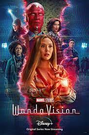
WandaVision (2021)
WandaVision is an American television miniseries created by Jac Schaeffer for the streaming service Disney+, based on Marvel Comics featuring the
characters Wanda Maximoff / Scarlet Witch and Vision. It is the first television series in the Marvel Cinematic Universe (MCU) produced by Marvel Studios,
sharing continuity with the films of the franchise, and is set after the events of the film Avengers: Endgame (2019). It follows Wanda Maximoff and Vision
as they live an idyllic suburban life in the town of Westview, New Jersey, until their reality starts moving through different decades of sitcom homages
and television tropes. Schaeffer served as head writer for the series, which was directed by Matt Shakman.Elizabeth Olsen and Paul Bettany reprise their
respective roles as Maximoff and Vision from the film series, with Debra Jo Rupp, Fred Melamed, Kathryn Hahn, Teyonah Parris, Randall Park, Kat Dennings,
and Evan Peters also starring. By September 2018, Marvel Studios was developing a number of limited series for Disney+ centered on supporting characters
rom the MCU films such as Maximoff and Vision, with Olsen and Bettany returning. Schaeffer was hired in January 2019, with the series officially announced
that April, and Shakman joining in August. The production used era-appropriate sets, costumes, and effects to recreate the different sitcom styles that
the series pays homage to. Filming began in Atlanta, Georgia, in November 2019, before production halted in March 2020 due to the COVID-19 pandemic.
Production resumed in Los Angeles in September 2020 and wrapped that November.
Read more...

The Falcon and The Winter Soldier (2021)
The Falcon and the Winter Soldier[a] is an American television miniseries created by Malcolm Spellman for the streaming service Disney+, based on Marvel
Comics featuring the characters Sam Wilson / Falcon and Bucky Barnes / Winter Soldier. It is the second television series in the Marvel Cinematic Universe
(MCU) produced by Marvel Studios, sharing continuity with the films of the franchise, and is set six months after Sam Wilson was handed the mantle of
Captain America in the film Avengers: Endgame (2019). Wilson teams up with Bucky Barnes to stop anti-patriots who believe the world was better during the
Blip. Spellman served as head writer for the series, which was directed by Kari Skogland.Sebastian Stan and Anthony Mackie reprise their respective roles
as Barnes and Wilson from the film series, with Wyatt Russell, Erin Kellyman, Danny Ramirez, Georges St-Pierre, Adepero Oduye, Don Cheadle, Daniel Brühl,
Emily VanCamp, Florence Kasumba, and Julia Louis-Dreyfus also starring. By September 2018, Marvel Studios was developing a number of limited series for
Disney+ centered on supporting characters from the MCU films, such as Wilson and Barnes. Spellman was hired in October, and chose to focus on the racial
and political issues raised by Wilson, a Black man, being handed Captain America's shield at the end of Endgame. The Falcon and the Winter Soldier was
announced in April 2019, when Stan and Mackie were confirmed to be starring. Skogland was hired to direct the next month. Filming began in October 2019 in
Atlanta, Georgia, before moving to the Czech Republic in March 2020. Production was halted due to the COVID-19 pandemic, but resumed in Atlanta in
September before wrapping in the Czech Republic in October.
Read more...
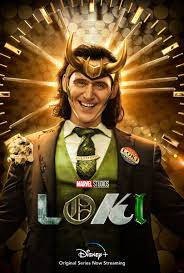
Loki (2021)
Loki is an American television series created by Michael Waldron for the streaming service Disney+, based on Marvel Comics featuring the character of the
same name. It is the third television series in the Marvel Cinematic Universe (MCU) produced by Marvel Studios, sharing continuity with the films of the
franchise. The series takes place after the events of the film Avengers: Endgame (2019), in which an alternate version of Loki created a new timeline.
Waldron served as head writer and Kate Herron directed the first season, with Eric Martin and the duo Justin Benson and Aaron Moorhead serving as head
writer and leading the directing team for the second season, respectively.Tom Hiddleston reprises his role as Loki from the film series. Gugu Mbatha-Raw,
Wunmi Mosaku, Eugene Cordero, Tara Strong, Owen Wilson, Sophia Di Martino, Sasha Lane, Jack Veal, DeObia Oparei, Richard E. Grant, and Jonathan Majors
also star. By September 2018, Marvel Studios was developing a number of limited series for Disney+, centered on supporting characters from the MCU films.
A series featuring Hiddleston as Loki was confirmed in November 2018. Waldron was hired in February 2019, and Herron had joined by that August. Martin,
who served as a writer on the first season, was revealed to be writing the entire second season in February 2022, along with Benson and Moorhead joining
to direct the majority of the season's episodes. Filming occurred in Atlanta, Georgia for the first season, with the second season being filmed in
the United Kingdom.
Read more...

What If...? (2021)
What If...? is an American animated anthology series created by A. C. Bradley for the streaming service Disney+, based on the Marvel Comics series of the
same name. It is the fourth television series in the Marvel Cinematic Universe (MCU) produced by Marvel Studios, and the studio's first animated series.
The series explores alternate timelines in the multiverse that show what would happen if major moments from the MCU films occurred differently. Bradley
serves as head writer with Bryan Andrews directing.Jeffrey Wright stars as the Watcher, who narrates the series, alongside many MCU film actors reprising
their roles. Marvel Studios was developing the series for Disney+ by the end of 2018, with Bradley and Andrews on board. It was officially announced in
April 2019. Marvel Studios' head of visual development Ryan Meinerding helped define the series' cel-shaded animation style, which was designed to reflect
the films and take inspiration from classic American illustrators. Animation for the first season is provided by Blue Spirit, Squeeze, Flying Bark
Productions, and Stellar Creative Lab, with Stephan Franck as head of animation.
Read more...

Hawkeye (2021)
Hawkeye is an American television miniseries created by Jonathan Igla for the streaming service Disney+, based on Marvel Comics featuring the characters
Clint Barton / Hawkeye and Kate Bishop / Hawkeye. It is the fifth television series in the Marvel Cinematic Universe (MCU) produced by Marvel Studios,
sharing continuity with the films of the franchise and taking place after the events of the film Avengers: Endgame (2019). It sees Clint Barton as he
partners with Kate Bishop to confront enemies from his past in order to be with his family in time for Christmas. Igla served as head writer with Rhys
Thomas leading the directing team.Jeremy Renner reprises his role as Clint Barton from the film series, with Hailee Steinfeld joining him as Kate Bishop.
Tony Dalton, Fra Fee, Brian d'Arcy James, Aleks Paunovic, Piotr Adamczyk, Linda Cardellini, Simon Callow, Vera Farmiga, Alaqua Cox, Zahn McClarnon,
Florence Pugh, and Vincent D'Onofrio also star. Marvel Studios was developing a limited series for Disney+ centered on Hawkeye by April 2019, with Renner
returning. The series was officially announced that July and Igla joined in September, with Steinfeld unofficially attached at that point. Thomas and Bert
& Bertie joined as directors in July 2020 and filming began in New York City that December. Steinfeld and additional cast members were confirmed, and
filming concluded in late April 2021. Additional shooting took place in Atlanta, Georgia. Matt Fraction and David Aja's Hawkeye comic run served as a
major influence on the series.
Read more...

Moon Knight (2022)
Moon Knight is an American television miniseries created by Jeremy Slater for the streaming service Disney+, based on the Marvel Comics featuring the
character of the same name. It is the sixth television series in the Marvel Cinematic Universe (MCU) to be produced by Marvel Studios, sharing continuity
with the films of the franchise. It follows Marc Spector and Steven Grant, two alters of a man with dissociative identity disorder (DID), as they are
drawn into a mystery involving Egyptian gods. Slater serves as head writer with Mohamed Diab leading the directing team.Oscar Isaac stars as Marc Spector
/ Moon Knight and Steven Grant / Mr. Knight, with May Calamawy, Karim El Hakim, F. Murray Abraham, Ethan Hawke, Ann Akinjirin, David Ganly, Khalid
Abdalla, Gaspard Ulliel, Antonia Salib, Fernanda Andrade, Rey Lucas, Sofia Danu, and Saba Mubarak also starring. The series was announced in August 2019,
with Slater hired in November. Diab was hired to direct four episodes in October 2020, with directing duo Justin Benson and Aaron Moorhead joining in
January 2021 to direct the other two. Isaac was confirmed to star at the time; he used different accents to differentiate Spector's various identities.
Filming took place from April to October 2021, primarily in Budapest as well as in Jordan, Slovenia, and Atlanta, Georgia.
Read more...

Ms. Marvel (2022)
Ms. Marvel is an American television miniseries created by Bisha K. Ali for the streaming service Disney+, based on the Marvel Comics featuring the
character Kamala Khan / Ms. Marvel. It is the seventh television series in the Marvel Cinematic Universe (MCU) produced by Marvel Studios, sharing
continuity with the films of the franchise. It follows Kamala Khan, a 16-year-old fangirl of the Avengers, who struggles to fit in until she gains her own
powers. Ali serves as head writer with Adil & Bilall (Adil El Arbi and Bilall Fallah) leading the directing team.Iman Vellani stars as Kamala Khan / Ms.
Marvel, with Matt Lintz, Yasmeen Fletcher, Zenobia Shroff, Mohan Kapur, Saagar Shaikh, Laurel Marsden, Azhar Usman, Rish Shah, Arian Moayed, Alysia
Reiner, Laith Nakli, Nimra Bucha, Travina Springer, Adaku Ononogbo, Samina Ahmad, Fawad Khan, Mehwish Hayat, Farhan Akhtar, and Aramis Knight also
starring. The series was announced with Ali's involvement in August 2019. Vellani was cast in September 2020, with El Arbi and Fallah, Meera Menon, and
Sharmeen Obaid-Chinoy hired as the series' directors. Filming began in early November 2020, shooting in Atlanta, Georgia, and New Jersey, before
concluding in Thailand in May 2021.
Read more...
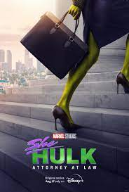
She-Hulk: Attorney at Law (2022)
She-Hulk: Attorney at Law is an upcoming American television series created by Jessica Gao for the streaming service Disney+, based on the Marvel Comics
character She-Hulk. It is intended to be the eighth television series in the Marvel Cinematic Universe (MCU) produced by Marvel Studios, sharing
continuity with the films of the franchise. It follows Jennifer Walters, a lawyer specializing in cases involving superhumans, who also becomes the green
superhero She-Hulk. Gao serves as head writer with Kat Coiro leading the directing team.Tatiana Maslany stars as Jennifer Walters / She-Hulk, alongside
Jameela Jamil, Josh Segarra, Ginger Gonzaga, Jon Bass, Renée Elise Goldsberry, Tim Roth, Mark Ruffalo, and Benedict Wong. She-Hulk was announced in August
2019, with Gao hired in November. Coiro joined to direct multiple episodes in September 2020, and Maslany was cast. By December, Roth and Ruffalo had
joined the cast and Anu Valia was also set to direct. Filming began in mid-April 2021 in Los Angeles and Atlanta, Georgia, and lasted until mid-August.
The subtitle for the series was added by May 2022.
Read more...

Untitled Marvel Halloween special
The untitled Marvel Halloween special is an upcoming American television special directed by Michael Giacchino for the streaming service Disney+, based on
Marvel Comics. It is intended to be the first television special in the Marvel Cinematic Universe (MCU), sharing continuity with the films of the
franchise. The special is produced by Marvel Studios.Gael García Bernal stars in the special, along with Laura Donnelly. Development of the special had
begun by August 2021, with Bernal cast that November. Giacchino joined by March 2022, ahead of the start of filming later that month in Atlanta, Georgia,
and concluded by late April.
Read more...

The Guardians of the Galaxy Holiday Special
The Guardians of the Galaxy Holiday Special is an upcoming American television special created, written, and directed by James Gunn for the streaming
service Disney+, based on the Marvel Comics superhero team Guardians of the Galaxy. It is intended to be the second television special in the Marvel
Cinematic Universe (MCU), sharing continuity with the films of the franchise. The special is produced by Marvel Studios.Chris Pratt, Zoe Saldaña, Dave
Bautista, Vin Diesel, Bradley Cooper, Karen Gillan, and Pom Klementieff will star, reprising their roles from the film series. Gunn had worked on the
concept for the special for several years before it was announced in December 2020. Filming occurred from February to late April 2022 in Atlanta, Georgia
and Los Angeles, during the production of Guardians of the Galaxy Vol. 3 (2023).
Read more...

Secret Invasion
Secret Invasion is an upcoming American television miniseries created by Kyle Bradstreet for the streaming service Disney+, based on the Marvel Comics
storyline of the same name. It is intended to be the ninth television series in the Marvel Cinematic Universe (MCU) produced by Marvel Studios, sharing
continuity with the films of the franchise. Bradstreet serves as head writer.Samuel L. Jackson reprises his role as Nick Fury from the film series, along
with Ben Mendelsohn as Talos, with Cobie Smulders, Martin Freeman, and Don Cheadle also starring. Development of the series began by September 2020, with
Bradstreet and Jackson attached. The title and premise of the series, along with Mendelsohn's casting, were revealed in December 2020. Additional castings
occurred throughout March and April 2021, followed by the hiring of Thomas Bezucha and Ali Selim to direct the series that May. Filming had begun in
London by September 2021, and concluded in late April 2022. Additional filming occurred across West Yorkshire and in Liverpool, England.
Read more...
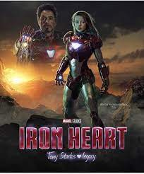
Ironheart
Ironheart is an upcoming American television series created by Chinaka Hodge for the streaming service Disney+, based on the Marvel Comics character of the
same name. It is intended to be part of the television series in the Marvel Cinematic Universe (MCU) produced by Marvel Studios, sharing continuity with
the films of the franchise. Hodge serves as head writer. The series is also produced by Proximity Media and 20th Television.Dominique Thorne stars as Riri
Williams / Ironheart in the series. The series was announced in December 2020, along with Thorne's casting. Hodge was hired in April 2021, with additional
castings revealed in February 2022. Sam Bailey and Angela Barnes joined to direct in April 2022. Filming began at Trilith Studios in Atlanta, Georgia by
early June 2022, and will also occur in Chicago, to last until mid-October 2022.
Read more...

Armor Wars
James Rhodes must confront one of Tony Stark's greatest fears when Stark's tech falls into the wrong hands.In December 2020, Marvel Studios announced a
series based on the Armor Wars comic book storyline, with Don Cheadle reprising his role as James Rhodes / War Machine.[51] In August 2021, Yassir Lester
was hired as the series' head writer.[254] The death of Tony Stark will factor into the series.[285] Filming is expected to begin in October 2022 at
Trilith Studios in Atlanta.Walton Goggins reprises his role as Sonny Burch from Ant-Man and the Wasp.[373][additional citation(s) needed]

Untitled Wakanda Series
In February 2021, a drama series set in Wakanda was revealed to be in development from Ryan Coogler, writer and director of Black Panther and Black
Panther: Wakanda Forever, through his company Proximity Media.[55][56] By May 2021, Danai Gurira had signed a deal to reprise her role as Okoye, the head
of the Dora Milaje, in the series, which was said to be an origin spin-off for the character.[374][375]